导论：经济学研究什么
从“微信免费吗”开始，建立经济学的对象（选择与稀缺资源配置）、实证与规范之分、三大支柱（最优化、均衡、实证检验），以及机会成本、成本收益分析、搭便车与因果推断。
本讲要点
- 稀缺与选择
- 经济主体与资源配置
- 实证 vs 规范
- 最优化与约束
- 机会成本
- 成本收益分析
- 均衡与搭便车
- 因果推断
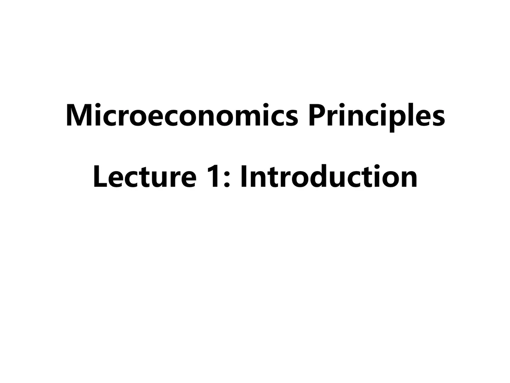
这是全课的第一页，也是「安装操作系统」的一讲。
- 课程：微观经济学原理（Microeconomics Principles），授课教师 Mohan Zhou，浙江大学经济学院。
- 这一讲的性质：几乎没有公式，也不考计算。它给你的是后面十一讲共用的语言——什么叫成本、什么叫均衡、什么叫「好」。
- 听课建议：把这一讲当成「词典」而不是「知识点」。之后每次遇到「这个机会成本是多少」「这个结果是不是均衡」，都要回到这里找定义。
一句话预告：今天我们要把「免费」这个词拆掉。
幻灯片原文 / 板书
Microeconomics Principles Lecture 1: Introduction
热身问题：微信是免费的吗？
先别急着答。请把你自己的第一反应写下来——绝大多数人的第一反应是「免费」，因为我们每个月确实没有为微信付过一分钱。
这正是经济学要训练的地方：账面上没有付款，不等于没有成本。这一讲后面所有内容，都是把这句直觉展开。
幻灯片原文 / 板书
Warm up --- Is WeChat free?
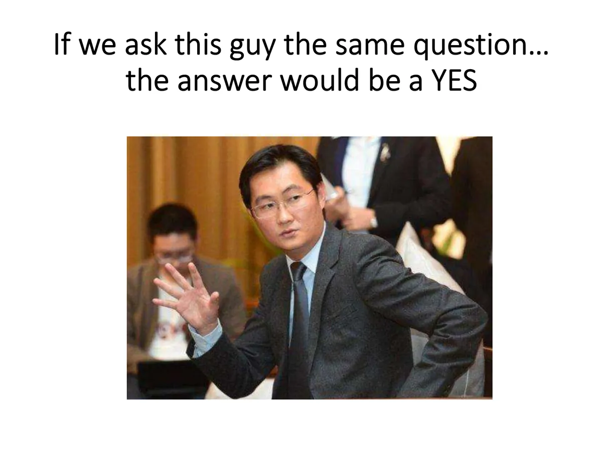
把同一个问题抛给另一个人，他的答案是 YES——微信是免费的。
为什么会有两个相反的答案？因为「免费」这个词省略了主语：对谁免费？
- 对你（用户）：不收钱，所以你觉得免费。
- 对提供者：服务器、带宽、机房、工程师、内容审核，每一项都要花钱。
同一个事实，站在不同位置看，结论完全相反。经济学从这里开始：先问「谁在承担」，再问「承担了多少」。
幻灯片原文 / 板书
If we ask this guy the same question… the answer would be a YES
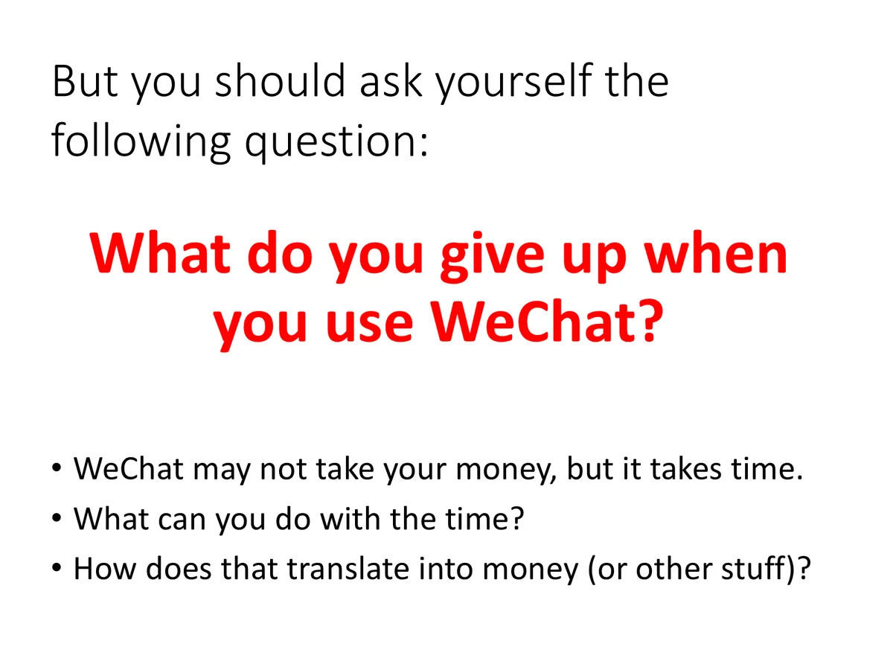
真正的追问在这里：你使用微信时，放弃了什么？
- 微信不收你的钱，但它收你的时间。
- 时间能用来干什么？刷题、睡觉、兼职、陪家人、发呆。
- 这些被放弃的东西，能不能折算成钱？能——用你时间的「下一个最好用途」的价格折算。
于是「免费」变成了一个有价格的判断：你每小时的时间值多少钱，你就在为微信付多少钱。这一页是全讲的种子。
幻灯片原文 / 板书
But you should ask yourself the following question: --- What do you give up when you use WeChat? WeChat may not take your money, but it takes time. What can you do with the time? How does that translate into money (or other stuff)?
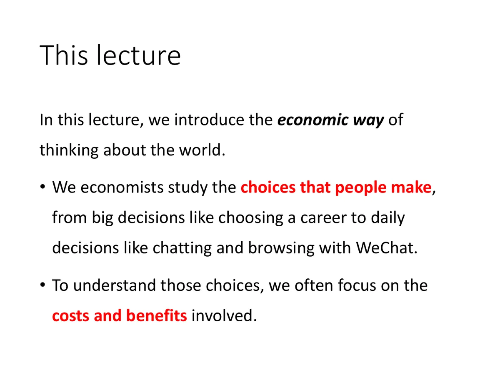
本讲要交付的东西：经济学的思维方式（the economic way of thinking）。
- 经济学家研究人们做出的选择：从「选什么专业、要不要读研」这种大决策，到「刷不刷微信、骑电动车戴不戴头盔」这种日常决策。
- 理解选择的通用办法：看成本与收益（costs and benefits）。
- 注意措辞：不是「看钱」，是「看成本和收益」。成本可以是时间、健康、机会、心情；收益可以是分数、名声、安心。
幻灯片原文 / 板书
This lecture --- In this lecture, we introduce the economic way of thinking about the world. We economists study the choices that people make, from big decisions like choosing a career to daily decisions like chatting and browsing with WeChat. To understand those choices, we often focus on the costs and benefits involved.
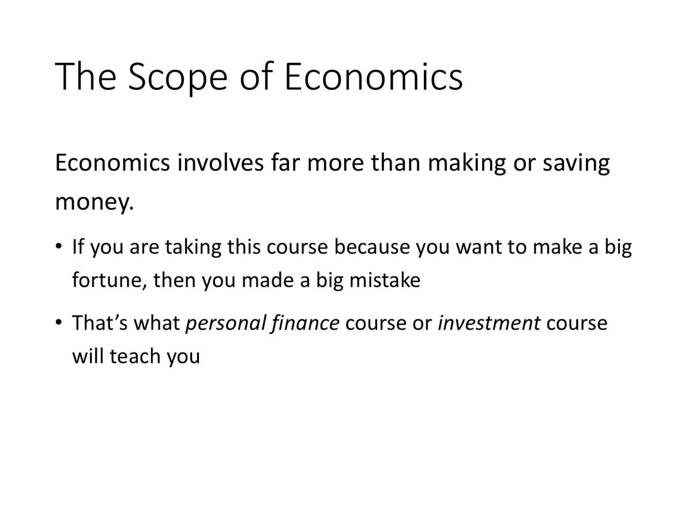
经济学的范围（The Scope of Economics）比多数人想的大得多。
课件在这里说了一句很直白的话：如果你选这门课是想「发大财」，那你选错了——那是个人理财课、投资课要讲的事。
经济学不教你怎样变富，它教你怎样理解人们为什么这样选、以及这些选择加总起来会产生什么结果。这两件事在生活里比「理财技巧」更底层。
幻灯片原文 / 板书
The Scope of Economics --- Economics involves far more than making or saving money. If you are taking this course because you want to make a big fortune, then you made a big mistake That’s what personal finance course or investment course will teach you
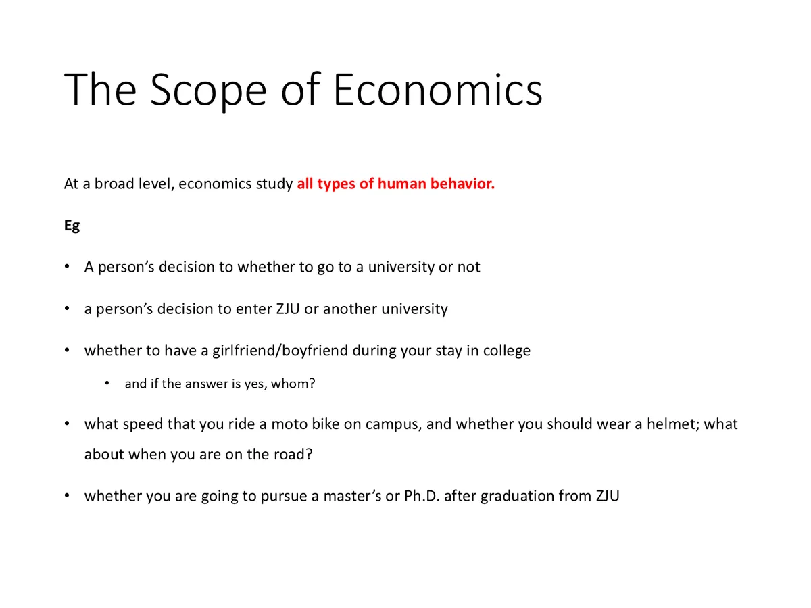
经济学研究所有类型的人类行为。课件列了一串很接地气的例子：
- 要不要上大学？上浙大还是别的学校？
- 大学期间要不要谈恋爱？如果要，和谁？
- 在校园里骑电动车骑多快？戴不戴头盔？上了马路呢？
- 本科毕业后读硕士、读博士，还是工作？
这些例子的共同点不是「钱」，而是在约束下做取舍。凡是「想要更多 A 就必须少一点 B」的场合，经济学都有话说。
幻灯片原文 / 板书
The Scope of Economics --- At a broad level, economics study all types of human behavior. Eg A person’s decision to whether to go to a university or not a person’s decision to enter ZJU or another university whether to have a girlfriend/boyfriend during your stay in college and if the answer is yes, whom? what speed that you ride a moto bike on campus, and whether you should wear a helmet; what about when you are on the road? whether you are going to pursue a master’s or Ph.D. after graduation from ZJU
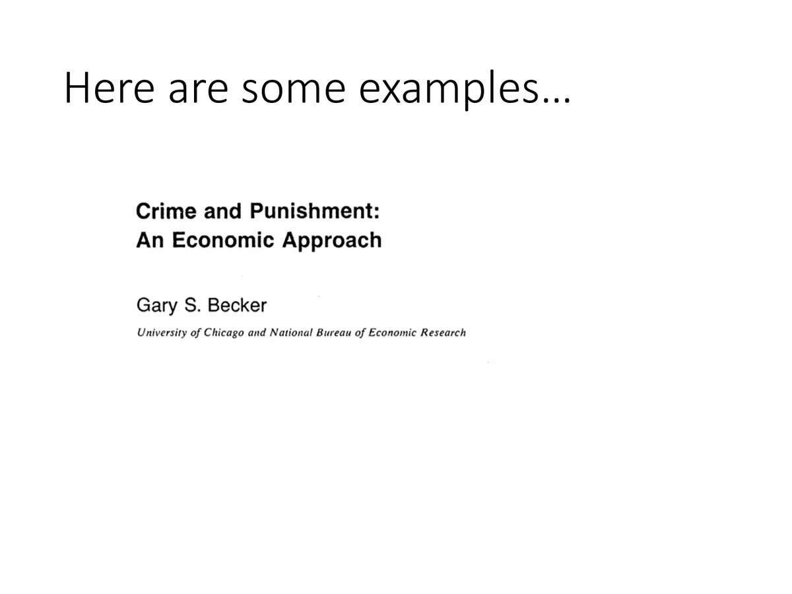
过渡页：下面是几个例子。
课件用这一页把话题从「日常小事」推向「看起来跟经济学无关的大事」——下一张就是一篇经济学论文的首页。
幻灯片原文 / 板书
Here are some examples…
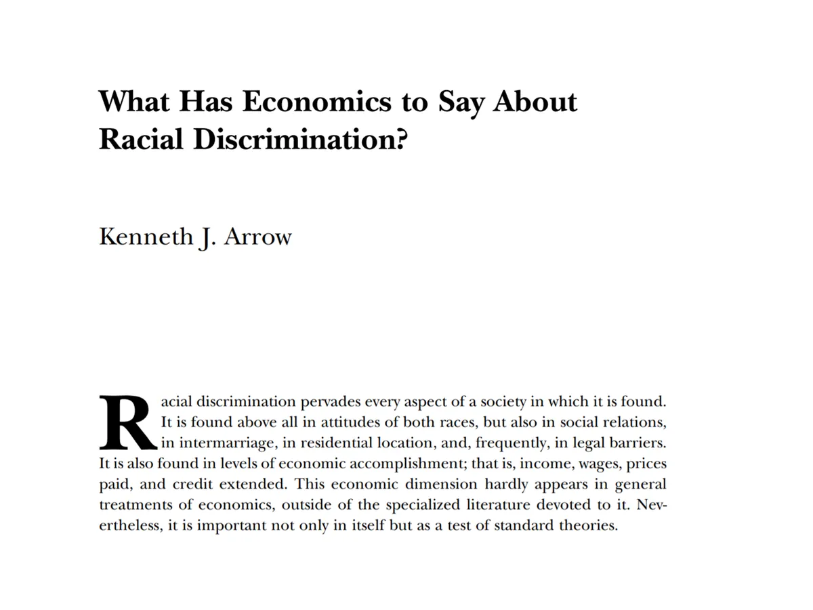
这一页贴的是 Kenneth Arrow 的论文《What Has Economics to Say About Racial Discrimination?》（经济学对种族歧视能说什么）的首页。Arrow 是诺贝尔经济学奖得主、一般均衡理论的奠基人之一。
为什么在导论里贴它？为了说明经济学的方法可以延伸到任何涉及取舍与配置的社会现象：歧视不只是态度问题，它同时是劳动市场、信贷市场、居住选择里的价格与数量问题。
- 你不需要同意「经济学能解释一切」，但要接受它的提问方式：谁在选择？约束是什么？结果对谁有利？
- 这也是本课的一个态度：经济学的边界很宽，但它的工具是统一的。
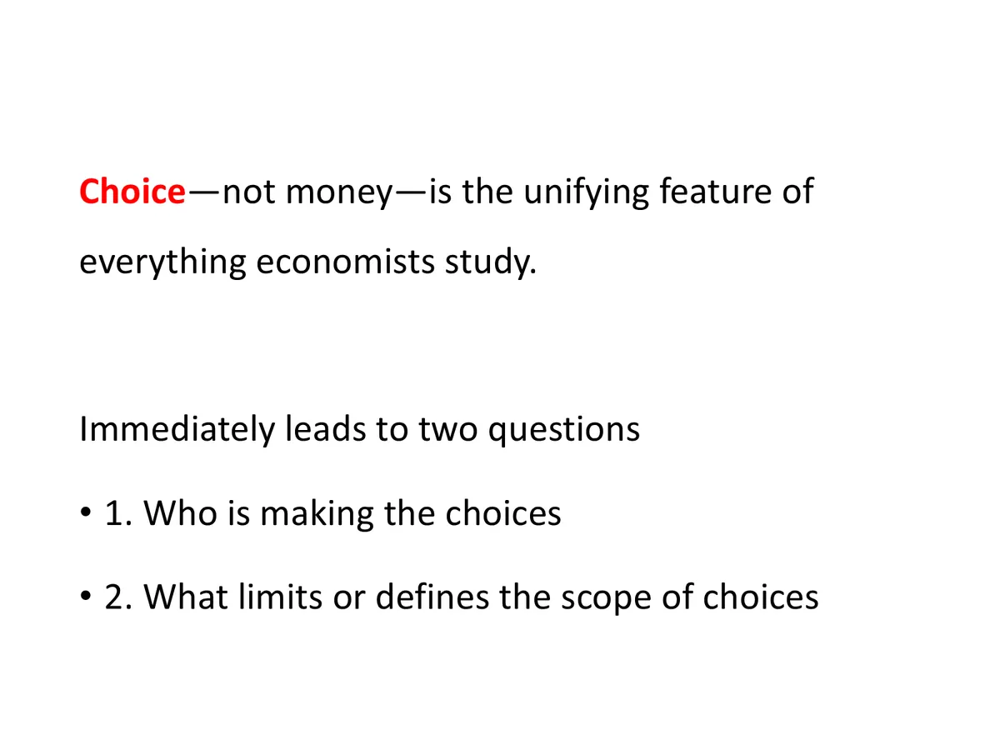
把整门课统一起来的，是「选择」，不是「金钱」。
一旦承认这一点，立刻产生两个必须回答的问题：
接下来的五页就在补这两个定义。这是全课的定义地基。
幻灯片原文 / 板书
Choice—not money—is the unifying feature of everything economists study. Immediately leads to two questions 1. Who is making the choices 2. What limits or defines the scope of choices
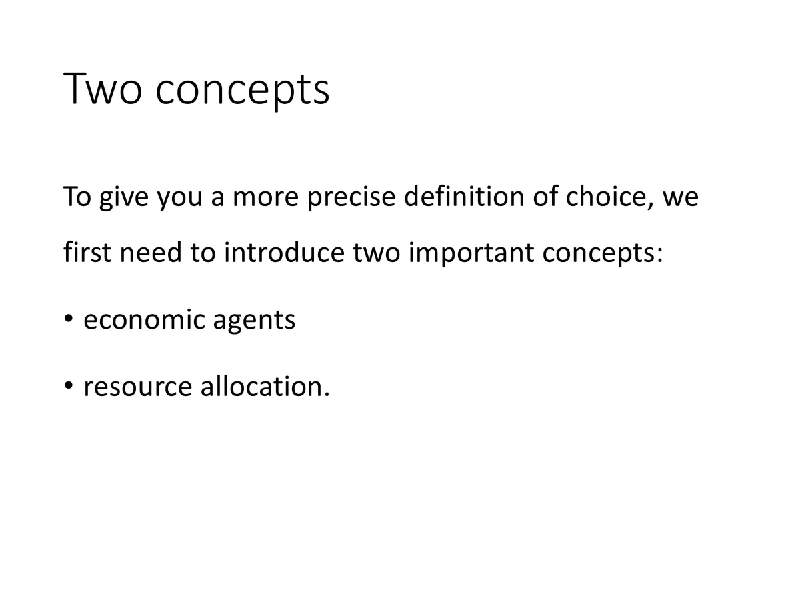
为了给「选择」一个精确的定义，先引入两个概念：
- 经济主体（economic agents）
- 资源配置（resource allocation）
经济学的定义最终要写成「主体 + 资源 + 配置」这三样东西的组合，所以先逐个交代。
幻灯片原文 / 板书
Two concepts --- To give you a more precise definition of choice, we first need to introduce two important concepts: economic agents resource allocation.
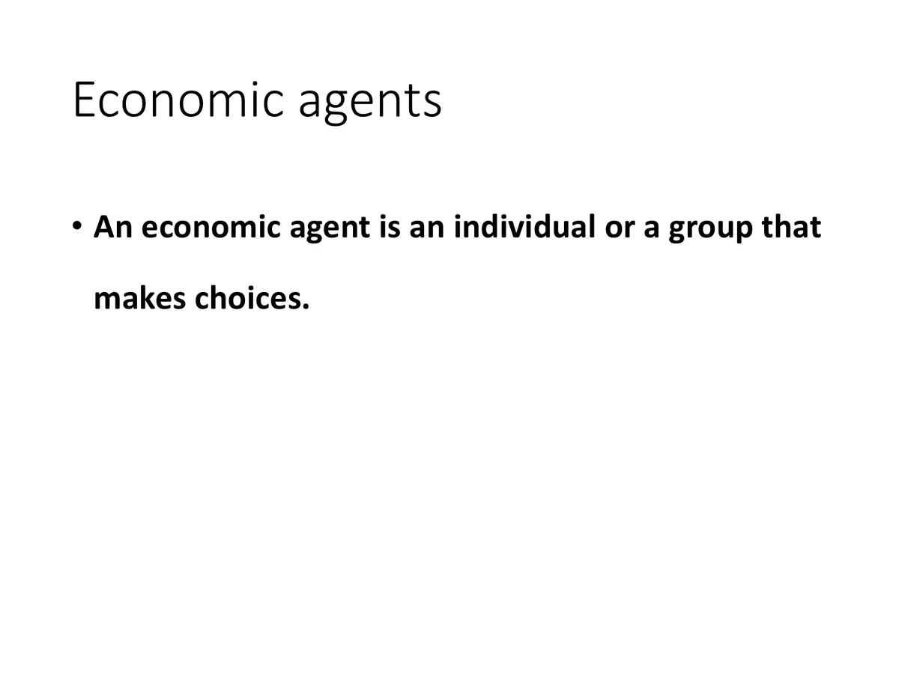
经济主体：做出选择的个人或群体（an individual or a group that makes choices）。
注意定义里没有「人」这个限制——「个人或群体」。这为下一页的推广留了口子。
幻灯片原文 / 板书
An economic agent is an individual or a group that makes choices. --- Economic agents
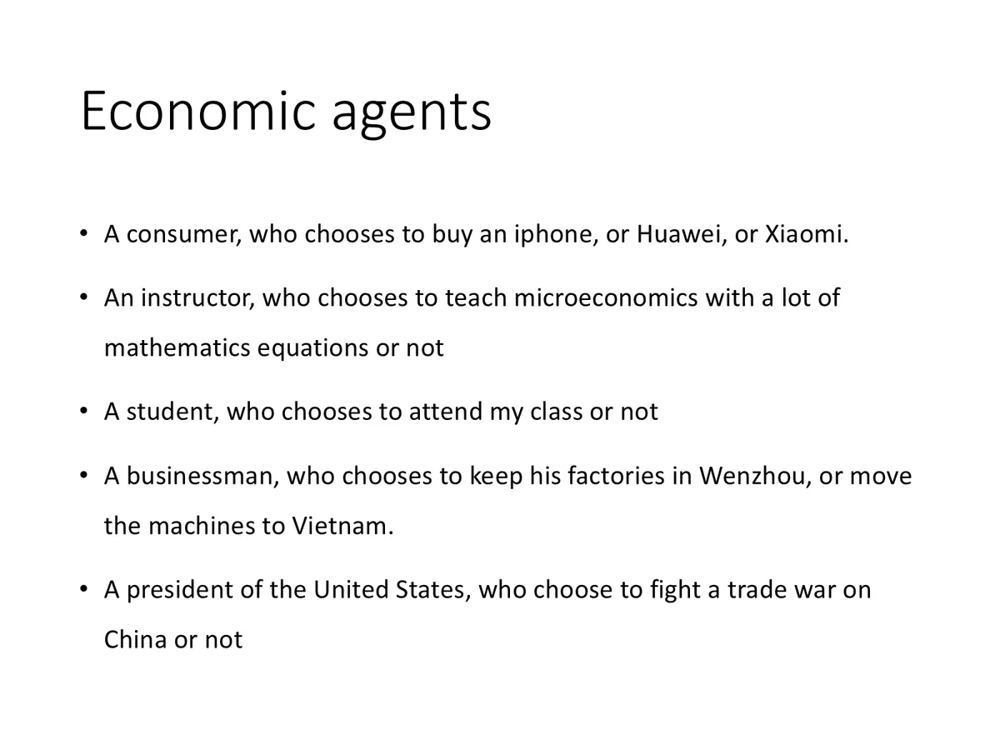
经济主体的五个例子，注意它们覆盖的层级：
- 一个消费者：买 iPhone、华为还是小米。
- 一位老师：微观经济学要不要用大量数学公式来讲。
- 一个学生：来不来上这门课。
- 一个商人：工厂留在温州，还是把机器搬到越南。
- 一位美国总统：要不要对中国打贸易战。
从一个人到一个国家，都是「在约束下做选择」的单位。分析框架不变，只是目标函数和约束变了。
幻灯片原文 / 板书
Economic agents --- A consumer, who chooses to buy an iphone, or Huawei, or Xiaomi. An instructor, who chooses to teach microeconomics with a lot of mathematics equations or not A student, who chooses to attend my class or not A businessman, who chooses to keep his factories in Wenzhou, or move the machines to Vietnam. A president of the United States, who choose to fight a trade war on China or not
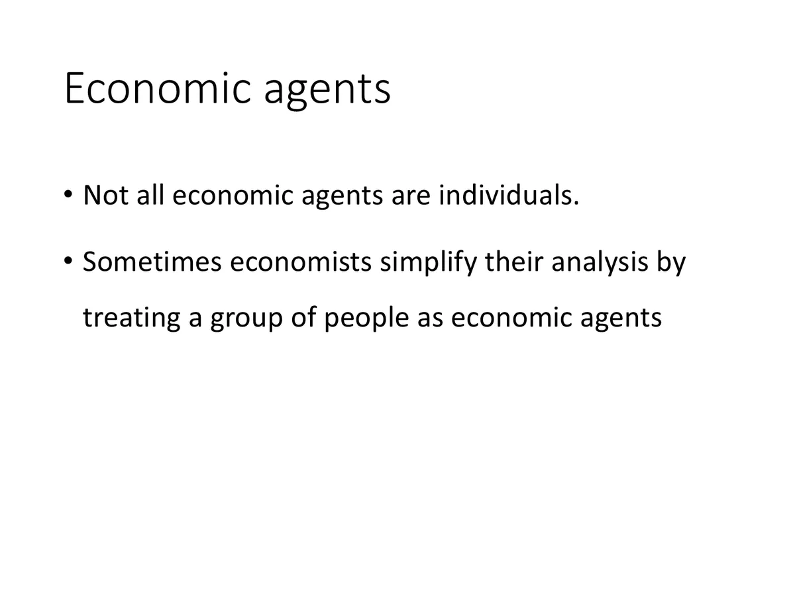
不是所有经济主体都是个人。
经济学家常常做简化：把一群人当成一个主体来处理（treating a group of people as economic agents）。这是方法论上的「抽象」——只要这群人有稳定的、可描述的选择规则，就可以当成一个决策者。
代价是：群体内部的冲突被抹掉了。什么时候可以这样简化，是建模时要交代清楚的事。
幻灯片原文 / 板书
Economic agents --- Not all economic agents are individuals. Sometimes economists simplify their analysis by treating a group of people as economic agents
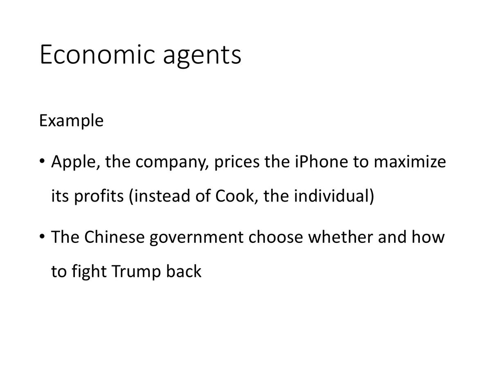
两个「群体作为主体」的例子：
- 苹果公司给 iPhone 定价，是为了最大化公司利润——不是库克个人的偏好。
- 中国政府决定要不要、以及怎样反制特朗普的贸易战——这是一个国家的选择，不是某个官员的选择。
所以当你看到「苹果决定涨价」，正确的翻译是：一个以利润为目标的主体，在它的约束下选择了涨价。
幻灯片原文 / 板书
Economic agents --- Example Apple, the company, prices the iPhone to maximize its profits (instead of Cook, the individual) The Chinese government choose whether and how to fight Trump back
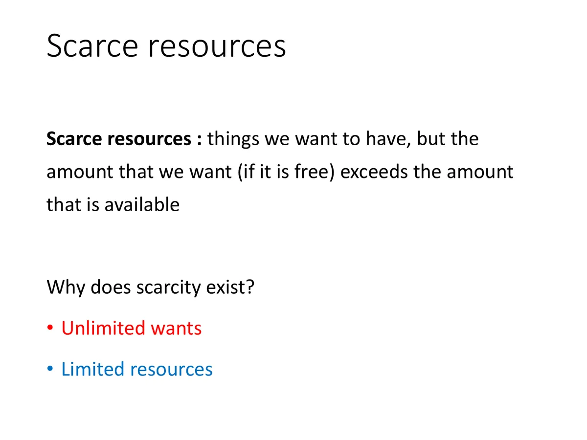
稀缺资源（scarce resources）：我们想要的东西，在免费时想要的数量超过了实际可得的数量。
稀缺为什么存在？两个条件同时成立才稀缺：
- 欲望无限（unlimited wants）
- 资源有限（limited resources）
注意定义里的「如果免费」这个条件——稀缺不是「贵」，而是「即使价格为零也不够分」。
幻灯片原文 / 板书
Scarce resources --- Scarce resources : things we want to have, but the amount that we want (if it is free) exceeds the amount that is available Why does scarcity exist? Unlimited wants Limited resources
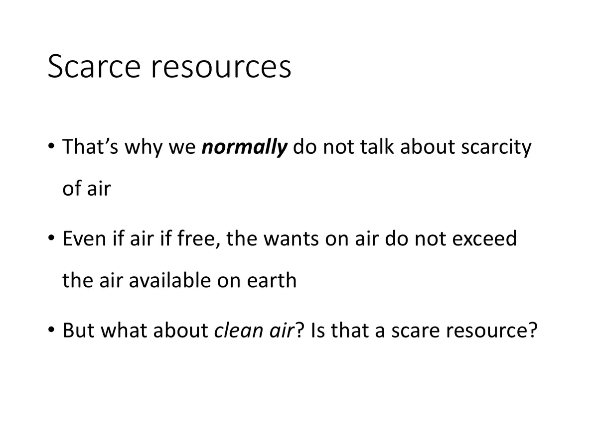
用空气检验这个定义：
- 我们平常不说「空气稀缺」，因为即使空气免费，人类想呼吸的空气量也不会超过地球上的空气量。
- 但干净的空气呢？在雾霾天，想要「免费吸到干净空气」的人远多于能提供的量——它就是稀缺资源。
这一页教的是一个技巧：稀缺性取决于你把商品定义得多细。定义一变，「稀缺/不稀缺」的结论就变。
幻灯片原文 / 板书
Scarce resources --- That’s why we normally do not talk about scarcity of air Even if air if free, the wants on air do not exceed the air available on earth But what about clean air? Is that a scare resource?
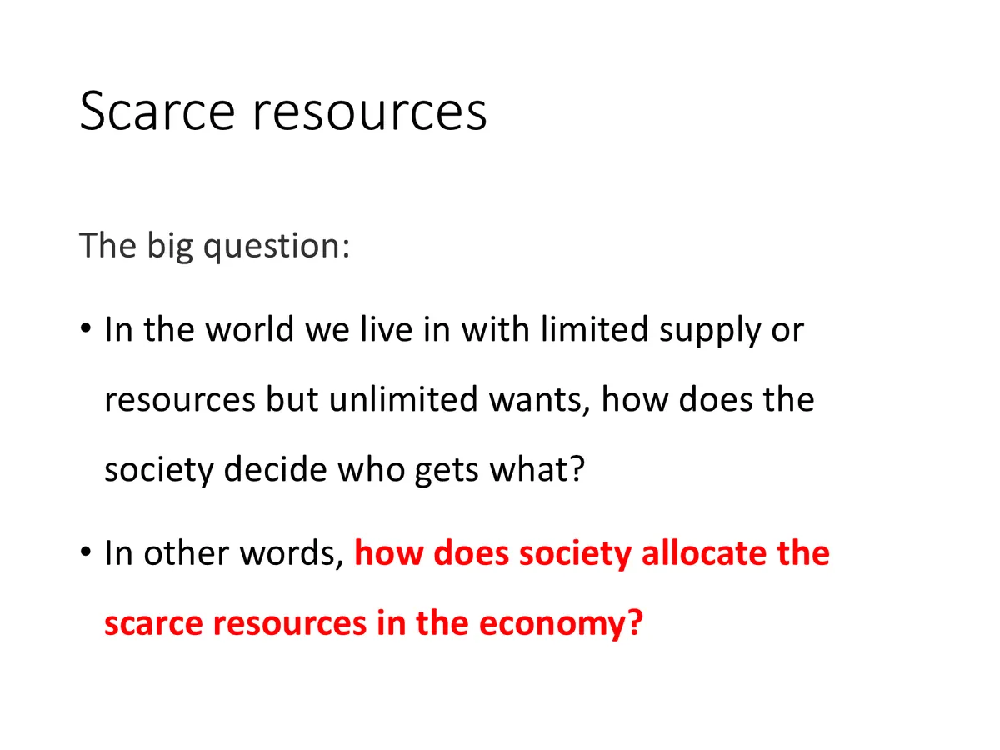
于是有了经济学要回答的大问题：
在一个资源有限、欲望无限的世界里，社会怎样决定「谁得到什么」？
说白了，社会如何配置稀缺资源（how society allocates the scarce resources）。
价格是答案之一，但不是唯一答案——排队、抽签、配给、按关系分配、按权力分配，都是配置机制。后面第 5 讲会比较它们的效率。
幻灯片原文 / 板书
Scarce resources --- The big question: In the world we live in with limited supply or resources but unlimited wants, how does the society decide who gets what? In other words, how does society allocate the scarce resources in the economy?
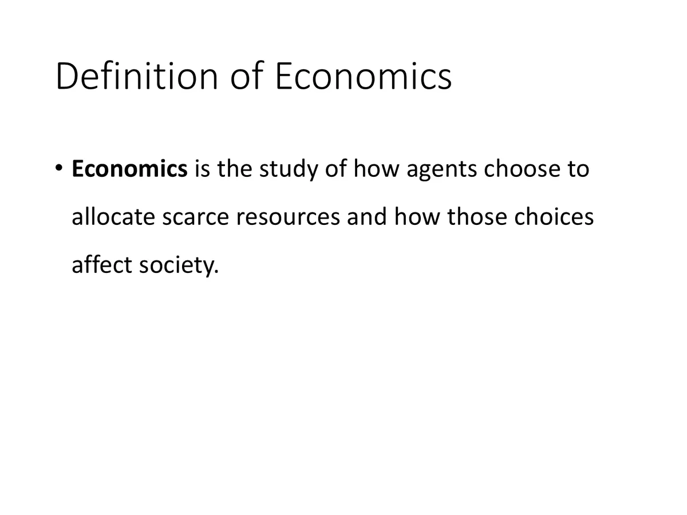
经济学的定义（请背下来，考试会考「定义 + 两个要点」）：
经济学研究经济主体如何选择配置稀缺资源，以及这些选择如何影响社会。
三个关键词：选择、配置、影响。缺一个都不是完整的定义。
幻灯片原文 / 板书
Definition of Economics --- Economics is the study of how agents choose to allocate scarce resources and how those choices affect society.
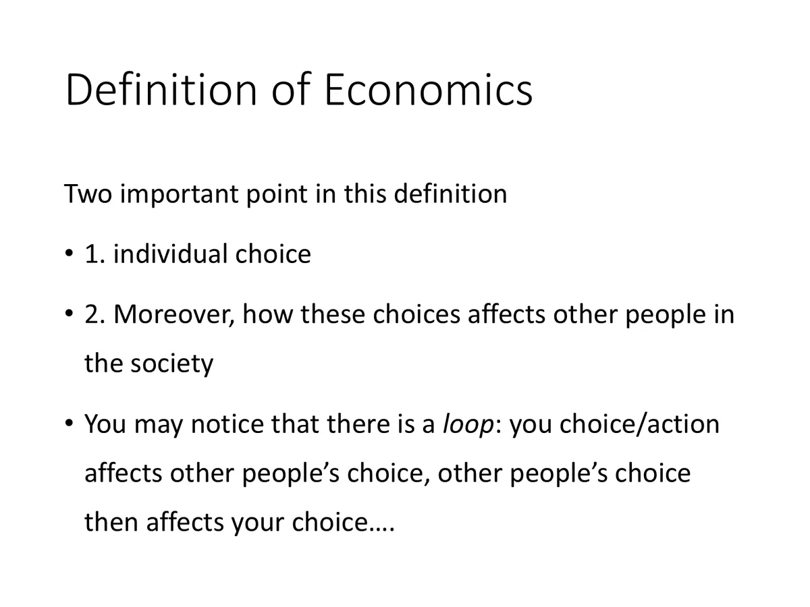
定义里有两个要点：
- 个体选择（individual choice）——分析的起点永远是一个个决策者。
- 这些选择如何影响社会中的其他人——这是经济学区别于「决策学」的地方。
课件还点出一个循环：你的选择影响别人的选择，别人的选择又反过来影响你的选择……这个循环正是下一节「均衡」的伏笔。
幻灯片原文 / 板书
Definition of Economics --- Two important point in this definition 1. individual choice 2. Moreover, how these choices affects other people in the society You may notice that there is a loop: you choice/action affects other people’s choice, other people’s choice then affects your choice….
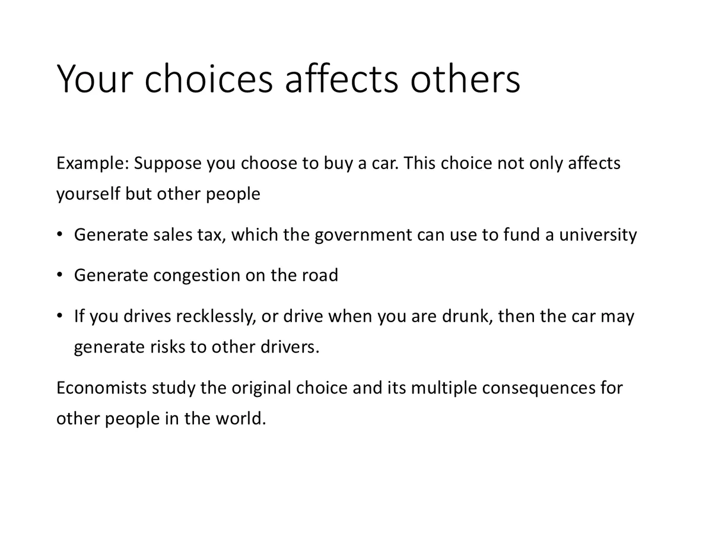
例子：你买一辆车。
这个选择至少有三重外部后果：
- 产生销售税，政府可以用它去办大学；
- 造成道路拥堵，别人的通勤时间变长；
- 如果你酒驾或鲁莽驾驶，会给其他司机带来风险。
经济学家研究的正是「最初的那个选择 + 它对他人的一连串后果」。这项能力在后面叫「外部性」（第 7 讲），在这里先埋下种子。
幻灯片原文 / 板书
Your choices affects others --- Example: Suppose you choose to buy a car. This choice not only affects yourself but other people Generate sales tax, which the government can use to fund a university Generate congestion on the road If you drives recklessly, or drive when you are drunk, then the car may generate risks to other drivers. Economists study the original choice and its multiple consequences for other people in the world.
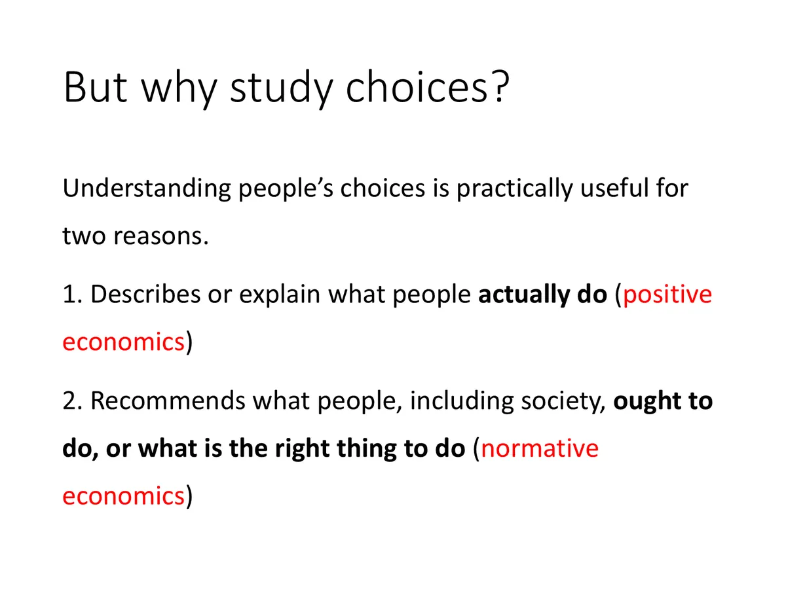
为什么要研究选择？ 两个实用理由，对应经济学的两种用法：
这两者的区分，是这一讲最容易被考、也最容易被混淆的地方。下面六页专门拆它。
幻灯片原文 / 板书
But why study choices? --- Understanding people’s choices is practically useful for two reasons. 1. Describes or explain what people actually do (positive economics) 2. Recommends what people, including society, ought to do, or what is the right thing to do (normative economics)
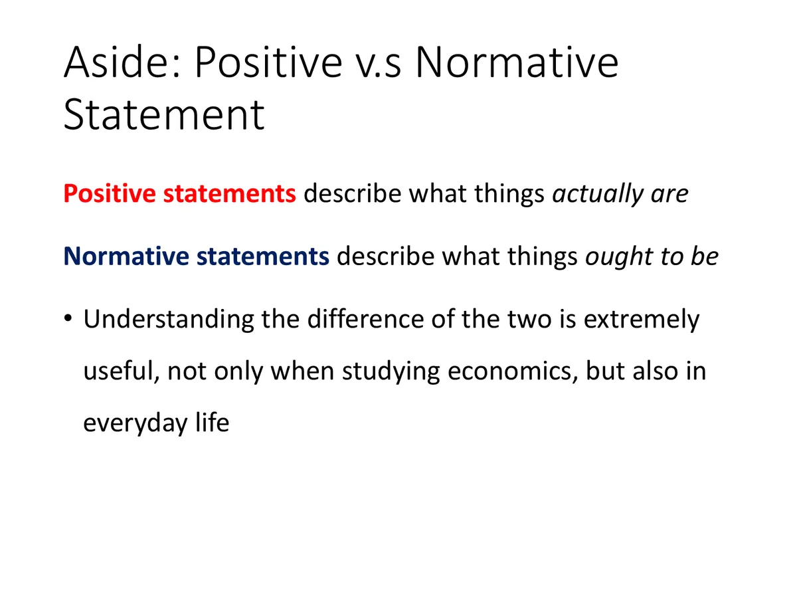
旁注：实证陈述 vs 规范陈述。
- 实证陈述描述事物实际是什么（what things actually are）。
- 规范陈述描述事物应该是什么（what things ought to be）。
课件强调：分清这两类陈述，不只对学经济学有用，在日常生活里也极其有用——因为很多争论之所以吵不出结果，是因为一方在说「是什么」，另一方在说「应该怎样」。
幻灯片原文 / 板书
Aside: Positive v.s Normative Statement --- Positive statements describe what things actually are Normative statements describe what things ought to be Understanding the difference of the two is extremely useful, not only when studying economics, but also in everyday life
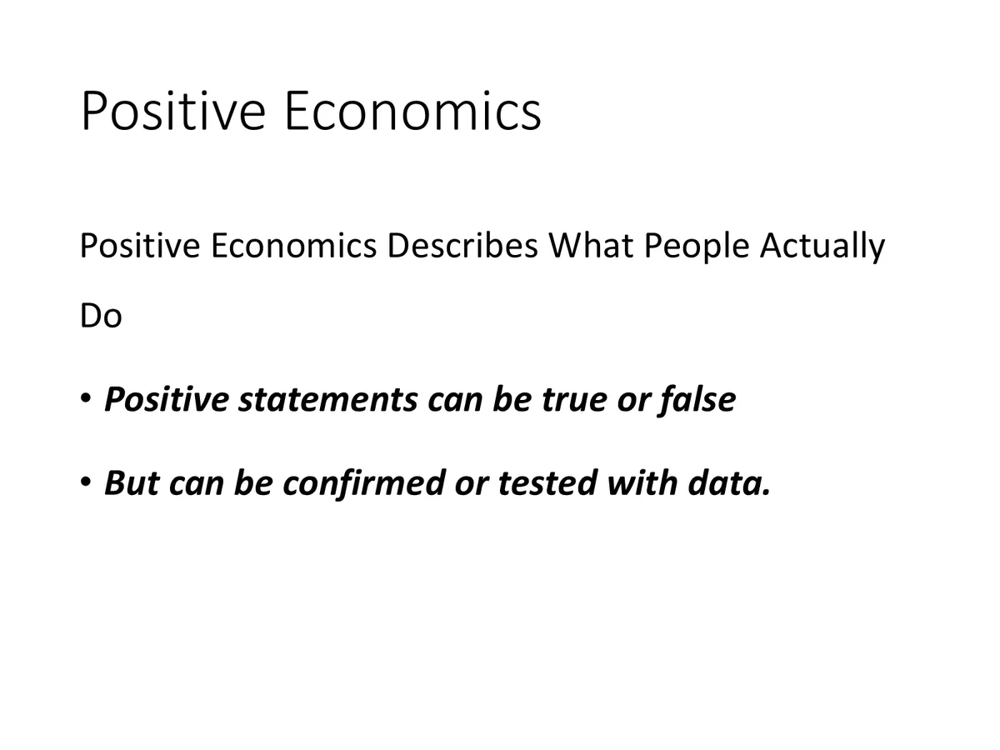
实证经济学的特征：
- 描述人们实际怎么做。
- 实证陈述可以为真，也可以为假。
- 但关键在：它可以被数据证实或检验（can be confirmed or tested with data）。
「可检验」是实证命题的身份证。一个不能被任何数据推翻的说法，不是实证命题。
幻灯片原文 / 板书
Positive Economics --- Positive Economics Describes What People Actually Do Positive statements can be true or false But can be confirmed or tested with data.
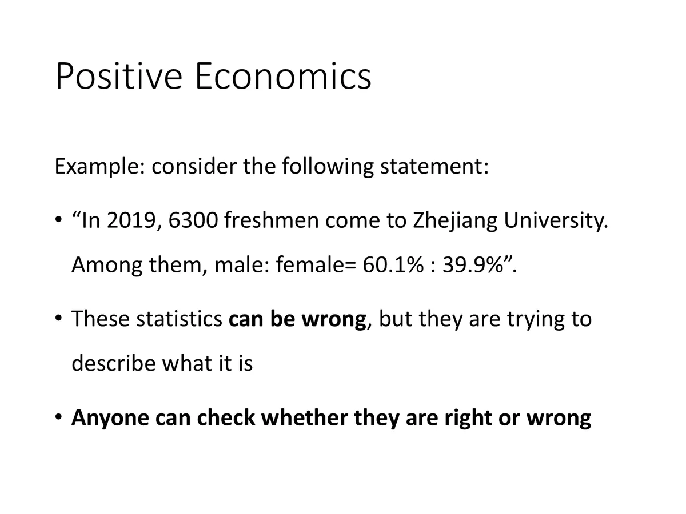
例子：「2019 年有 6300 名新生进入浙江大学，其中男生占 60.1%、女生占 39.9%。」
- 这些数字可能错，但它们试图描述「是什么」。
- 任何人都可以去查它对不对。
这就是实证陈述的典型形态：说一个可以被核对的事实。
幻灯片原文 / 板书
Positive Economics --- Example: consider the following statement: “In 2019, 6300 freshmen come to Zhejiang University. Among them, male: female= 60.1% : 39.9%”. These statistics can be wrong, but they are trying to describe what it is Anyone can check whether they are right or wrong
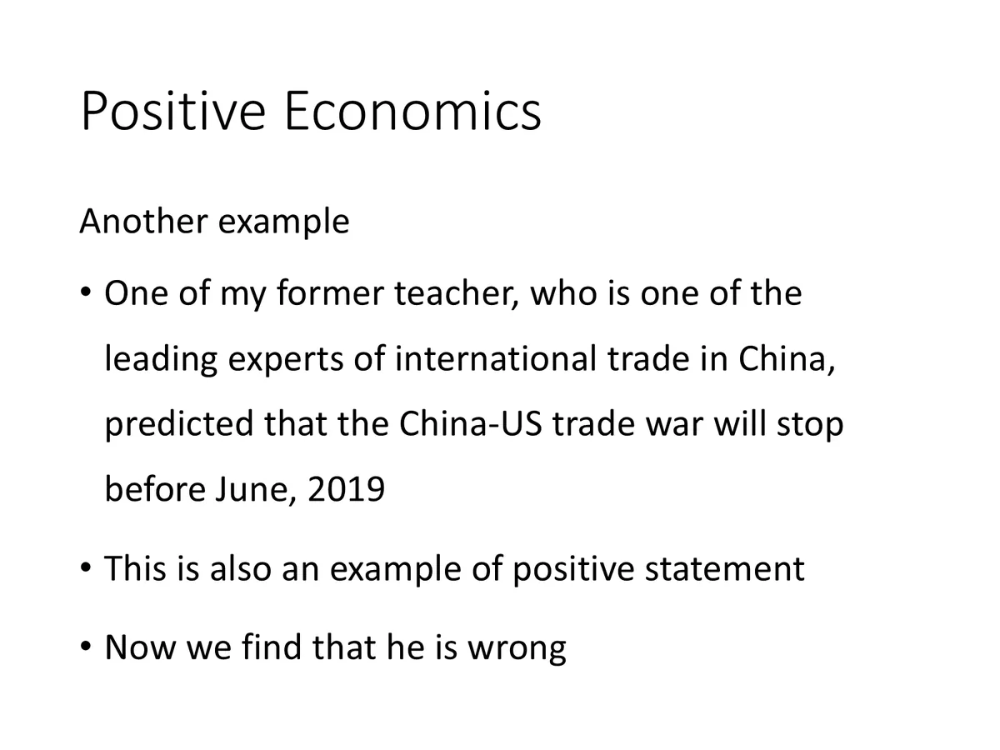
另一个例子：我的一位老师（国内国际贸易领域的顶尖专家之一）曾预测：中美贸易战会在 2019 年 6 月前结束。
- 这也是一个实证陈述——它预言一个可观察的事实。
- 现在我们知道：他错了。
注意这里的教学要点：预测错了，不改变它是实证命题的性质。实证命题的价值就在于它敢把自己交给数据。错了，修正理论；不敢被检验，什么也学不到。
幻灯片原文 / 板书
Positive Economics --- Another example One of my former teacher, who is one of the leading experts of international trade in China, predicted that the China-US trade war will stop before June, 2019 This is also an example of positive statement Now we find that he is wrong
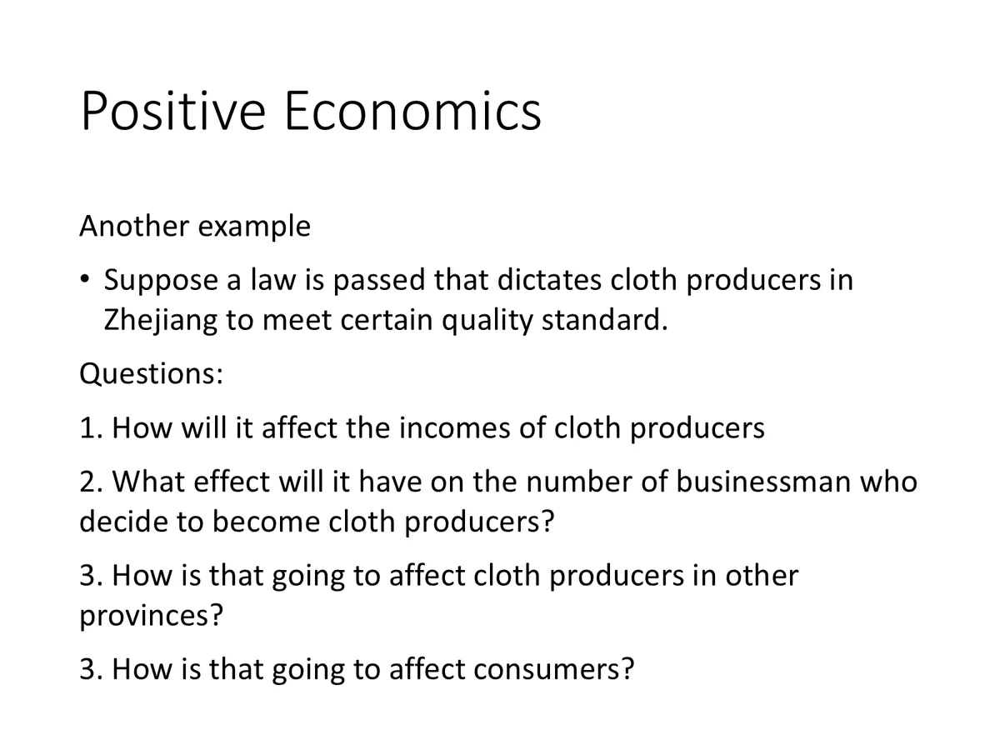
第三个例子（为后面的政策分析热身）：假设浙江通过一条法律，要求布料生产商达到某个质量标准。
四个问题：
- 它会怎样影响布料生产者的收入？
- 它会怎样影响决定成为布料生产者的人数？
- 它会怎样影响其他省份的布料生产者？
- 它会怎样影响消费者？
四个问题全是「会怎样」——都是实证问题，答案原则上可以用数据检验。
幻灯片原文 / 板书
Positive Economics --- Another example Suppose a law is passed that dictates cloth producers in Zhejiang to meet certain quality standard. Questions: 1. How will it affect the incomes of cloth producers 2. What effect will it have on the number of businessman who decide to become cloth producers? 3. How is that going to affect cloth producers in other provinces? 3. How is that going to affect consumers?
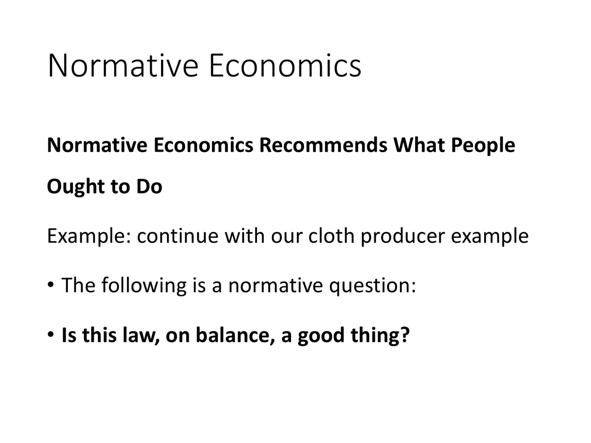
规范经济学：建议人们应该做什么。
接着布料例子问一个不同性质的问题：
这条法律，总体上是好事吗？（Is this law, on balance, a good thing?）
注意「总体上」三个字：它要求你把赢家的收益和输家的损失放在一起称重——而「怎么称」本身就不是数据能回答的。
幻灯片原文 / 板书
Normative Economics --- Normative Economics Recommends What People Ought to Do Example: continue with our cloth producer example The following is a normative question: Is this law, on balance, a good thing?
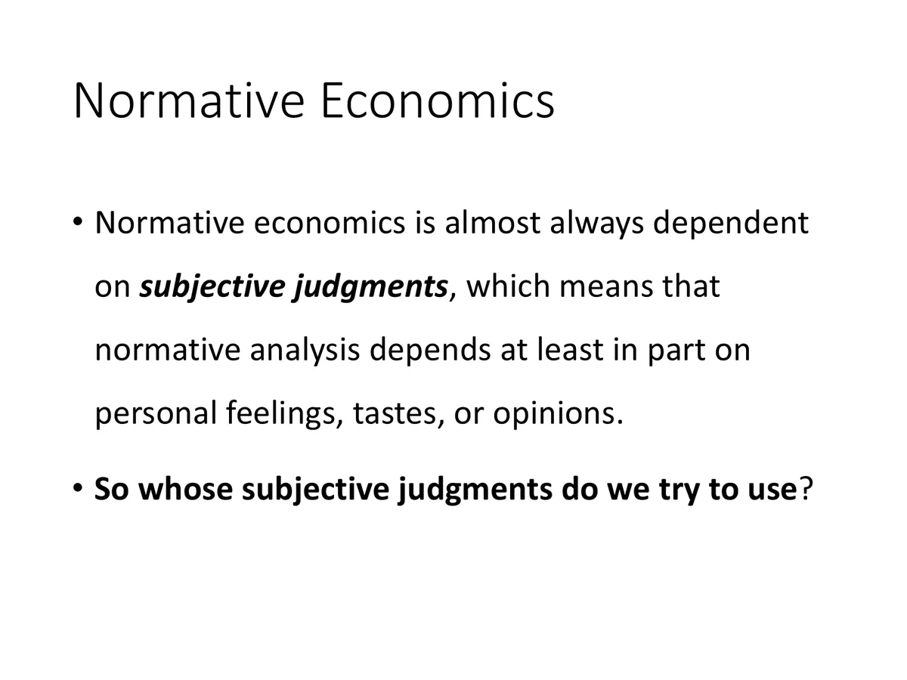
规范经济学几乎总是依赖主观判断（subjective judgments）：依赖个人的感受、品味、意见。
于是立刻有一个难题：我们该用谁的主观判断？
这个问题没有数学答案，但它有一个操作性的答案——下一页给出。
幻灯片原文 / 板书
Normative Economics --- Normative economics is almost always dependent on subjective judgments, which means that normative analysis depends at least in part on personal feelings, tastes, or opinions. So whose subjective judgments do we try to use?
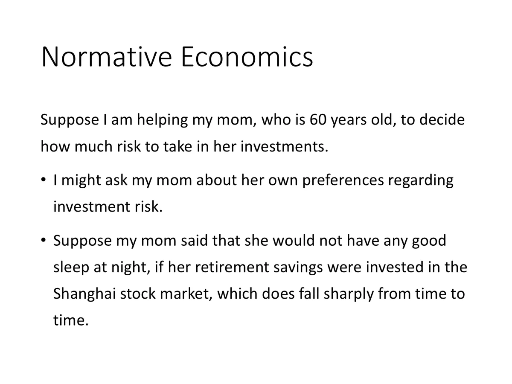
例子：我帮 60 岁的母亲决定她的养老储蓄该承担多大风险。
我不该替她决定。我先问她自己的偏好：她说，如果养老钱投在上证市场（时不时暴跌），她晚上睡不着。
这一步做了什么？把「应该」的判断权交还给当事人。
幻灯片原文 / 板书
Normative Economics --- Suppose I am helping my mom, who is 60 years old, to decide how much risk to take in her investments. I might ask my mom about her own preferences regarding investment risk. Suppose my mom said that she would not have any good sleep at night, if her retirement savings were invested in the Shanghai stock market, which does fall sharply from time to time.
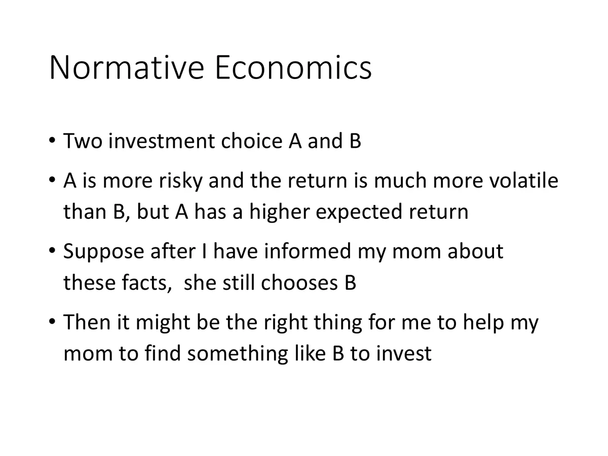
两个投资选项：
- A：风险更大、收益波动更大，但期望收益更高。
- B：更稳。
我把这些事实告诉母亲之后，她仍然选 B。
那么「对她而言正确的事」，就是帮她找到接近 B 的产品——哪怕从期望收益看 A 更「划算」。
幻灯片原文 / 板书
Normative Economics --- Two investment choice A and B A is more risky and the return is much more volatile than B, but A has a higher expected return Suppose after I have informed my mom about these facts, she still chooses B Then it might be the right thing for me to help my mom to find something like B to invest
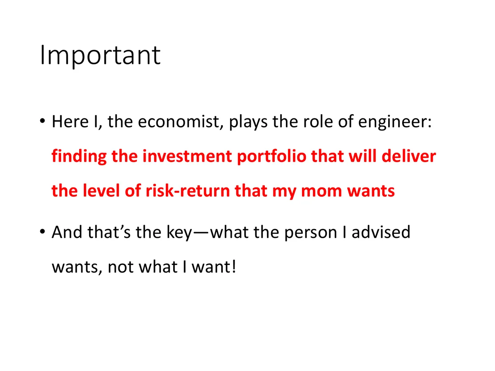
关键结论：在这里，经济学家扮演的是工程师的角色——找出能实现「客户想要的风险—收益组合」的那个方案。
关键是被建议者想要什么，不是你想要什么。（what the person I advised wants, not what I want!）
这句话是规范经济学的职业伦理：经济学家提供「如果这是你的目标，那么该这么做」的条件性建议，而不是把自己的偏好包装成「应该」。
幻灯片原文 / 板书
Important --- Here I, the economist, plays the role of engineer: finding the investment portfolio that will deliver the level of risk-return that my mom wants And that’s the key—what the person I advised wants, not what I want!
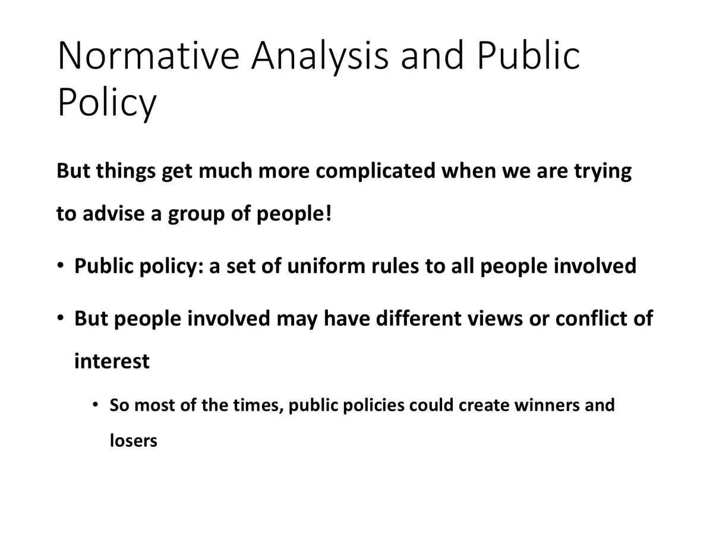
但一旦从「一个人」变成「一群人」，事情就麻烦了：
- 公共政策（public policy）是对所有相关的人施加的统一规则。
- 而被涉及的人观点不同、利益冲突。
- 所以绝大多数公共政策都会制造赢家和输家（create winners and losers）。
第 34–35 页给了四个例子，每一个都能立刻分裂出两派。
幻灯片原文 / 板书
Normative Analysis and Public Policy --- But things get much more complicated when we are trying to advise a group of people! Public policy: a set of uniform rules to all people involved But people involved may have different views or conflict of interest So most of the times, public policies could create winners and losers
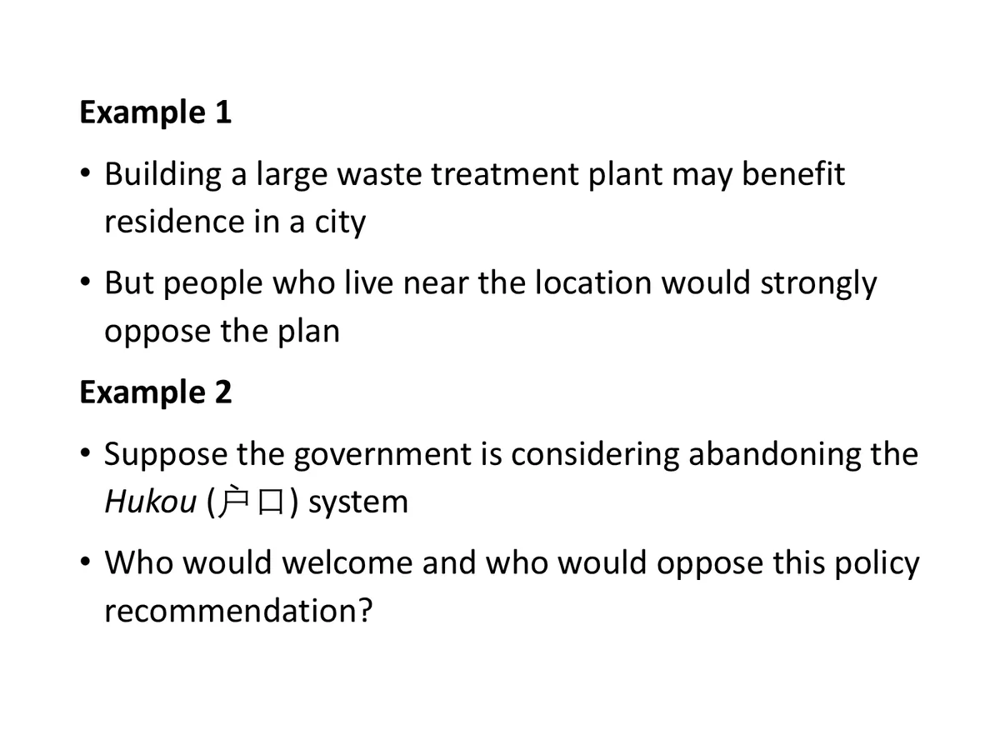
例 1：垃圾处理厂。 要建一个处理居民生活垃圾的厂，该建在哪？
例 2：取消户口制度。 让所有人都能自由迁移、自由落户。
这两个政策的共同点：无论怎么选，都一定有人受益、有人受损。垃圾厂建在 A 区，A 区居民受损、其他区受益（垃圾有人处理了）；取消户口，农民工受益、部分城市原住民受损（竞争公共服务与岗位）。
幻灯片原文 / 板书
Example 1 Building a large waste treatment plant may benefit residence in a city But people who live near the location would strongly oppose the plan Example 2 Suppose the government is considering abandoning the Hukou (户口) system Who would welcome and who would oppose this policy recommendation?
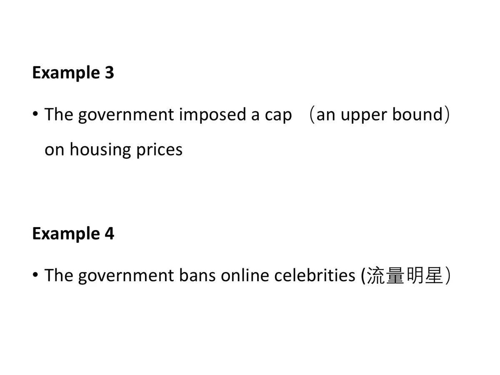
例 3：房价上限。 设定房价上限，让年轻人买得起房——但开发商和已有房的人受损。
例 4：彻底封禁流量明星。 让「娘炮」文化从这个国家消失——但明星本人、经纪公司、平台、粉丝受损。
经济学在这四件事里的作用是一样的：它能告诉你谁受损、受损多少、总收益是否超过总损失（全是实证问题）。它不能单独告诉你该不该做——那需要伦理判断。
幻灯片原文 / 板书
Example 3 The government imposed a cap （an upper bound） on housing prices Example 4 The government bans online celebrities (流量明星）
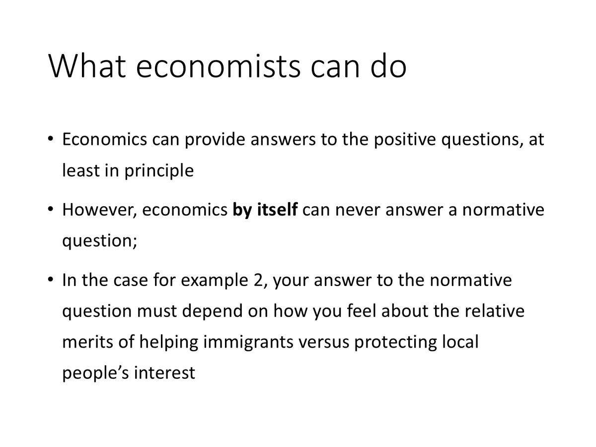
把结论说清楚：
- 经济学能回答实证问题：这个政策会让谁受益、谁受损、数量各是多少。
- 经济学无法单独回答规范问题：这样做到底该不该。
所以一个负责任的经济学家在给政策建议时，永远要把「事实部分」和「价值部分」分开摆。混在一起讲，听众就无法检验你的推理。
幻灯片原文 / 板书
What economists can do --- Economics can provide answers to the positive questions, at least in principle However, economics by itself can never answer a normative question; In the case for example 2, your answer to the normative question must depend on how you feel about the relative merits of helping immigrants versus protecting local people’s interest
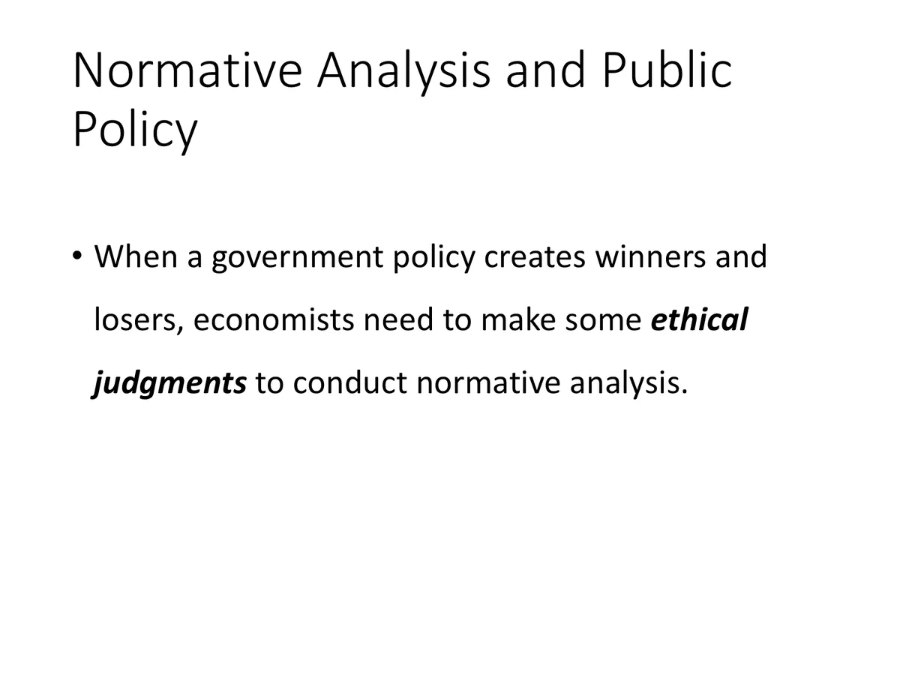
因为这些政策都会制造赢家和输家（they create winners and losers），所以决策者必须面对一个问题：
让一部分人受损，去换取另一部分人受益，是否正当？
注意，这已经是伦理问题，不是效率问题了。经济学可以计算「受益减受损是否为正」，但「为正是就应当做吗」——这一步跨出了经济学。
幻灯片原文 / 板书
Normative Analysis and Public Policy --- When a government policy creates winners and losers, economists need to make some ethical judgments to conduct normative analysis.
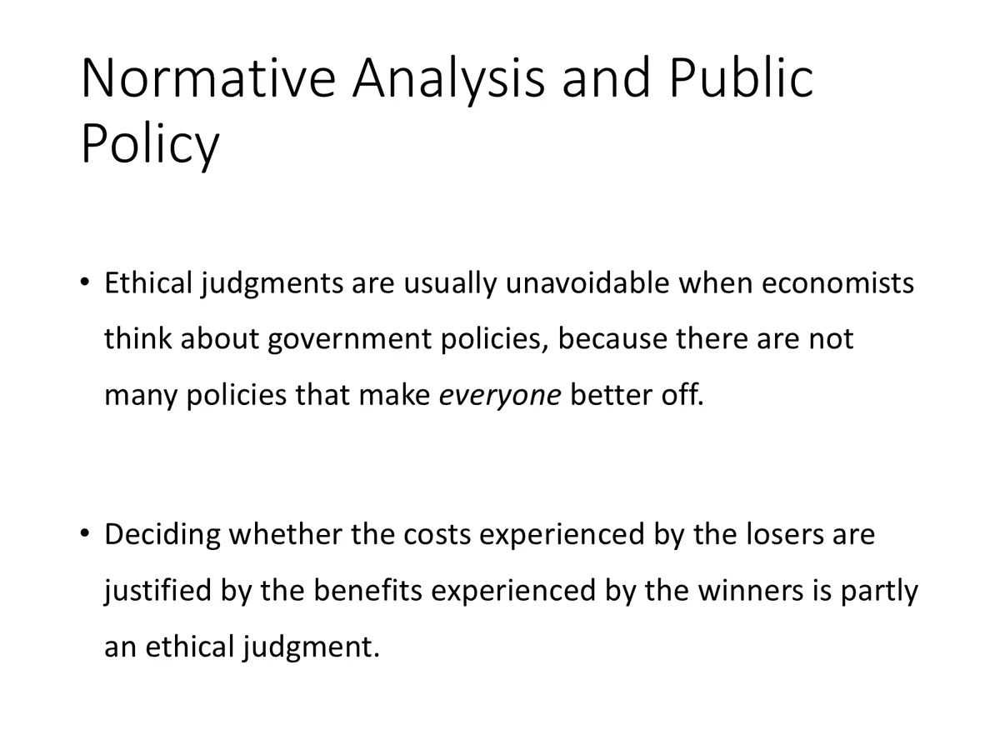
伦理判断不可避免。
- 你无法用「效率」绕开它：效率只说总蛋糕变大，不回答「谁分多少」。
- 你也无法用「多数人同意」绕开它：多数人也可以合法地抢劫少数人。
所以课件说：做政策建议时，伦理判断总是在场的，区别只在于你是否诚实地承认它。
幻灯片原文 / 板书
Normative Analysis and Public Policy --- Ethical judgments are usually unavoidable when economists think about government policies, because there are not many policies that make everyone better off. Deciding whether the costs experienced by the losers are justified by the benefits experienced by the winners is partly an ethical judgment.
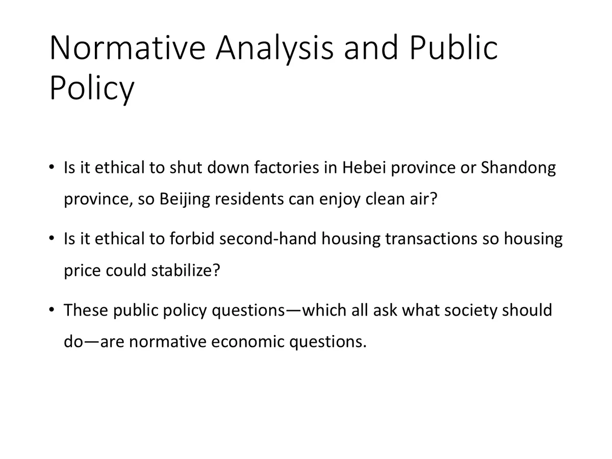
两个逼迫你表态的例子：
- 为了北京的蓝天，关停河北、山东的工厂。北京人得到蓝天，河北山东的工人失去工作。这道德吗？
- 禁止二手房交易。房价会跌，无房者受益，有房者资产缩水。这道德吗？
课件不给答案。它的教学目的是：让你意识到「我是一个只讲效率的经济学家」这个姿态，本身就是一种伦理立场（默认现状的分配是正当的）。
幻灯片原文 / 板书
Normative Analysis and Public Policy --- Is it ethical to shut down factories in Hebei province or Shandong province, so Beijing residents can enjoy clean air? Is it ethical to forbid second-hand housing transactions so housing price could stabilize? These public policy questions—which all ask what society should do—are normative economic questions.
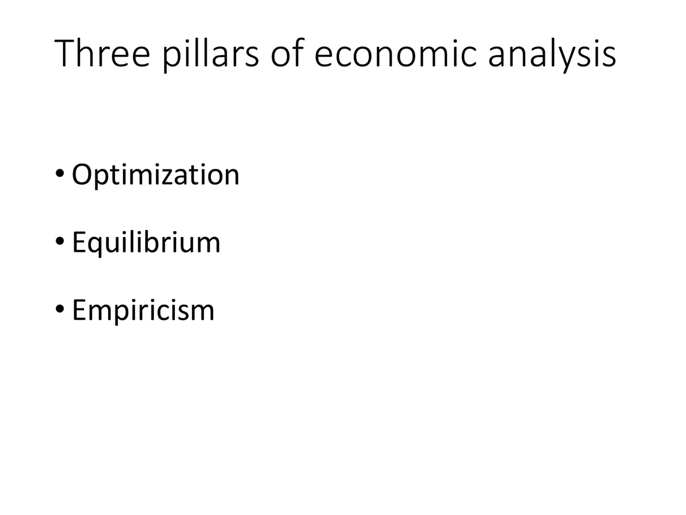
接下来是本讲的核心：经济学的三大支柱（The Three Pillars of Economics）。
- 最优化（optimization）——人们权衡利弊，选出对自己最好的选项。
- 均衡（equilibrium）——每个人的选择加总起来，会形成一个稳定的状态；别人的选择也在影响你。
- 实证主义（empiricism）——用数据检验理论。
记住这三根柱子的顺序：先有个人怎么选，再有众人怎么互动，最后是怎么验证。这门课后面每一讲都在用它们。
幻灯片原文 / 板书
Three pillars of economic analysis --- Optimization Equilibrium Empiricism
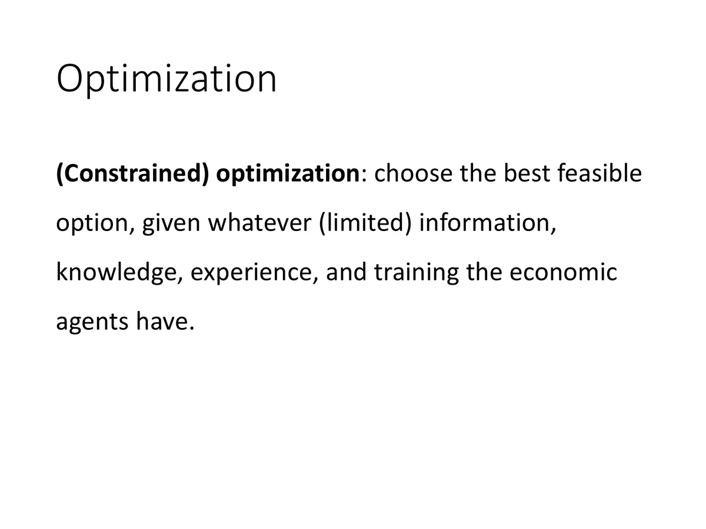
第一根支柱：最优化。
最优化 = 在给定约束下，从所有可行选项里选出最好的那个。
三个要件缺一不可：
- 有一个明确的目标（你想要什么）。
- 有一个约束（你不能全都要）。
- 有一套比较办法（怎样算「最好」）。
幻灯片原文 / 板书
Optimization --- (Constrained) optimization: choose the best feasible option, given whatever (limited) information, knowledge, experience, and training the economic agents have.
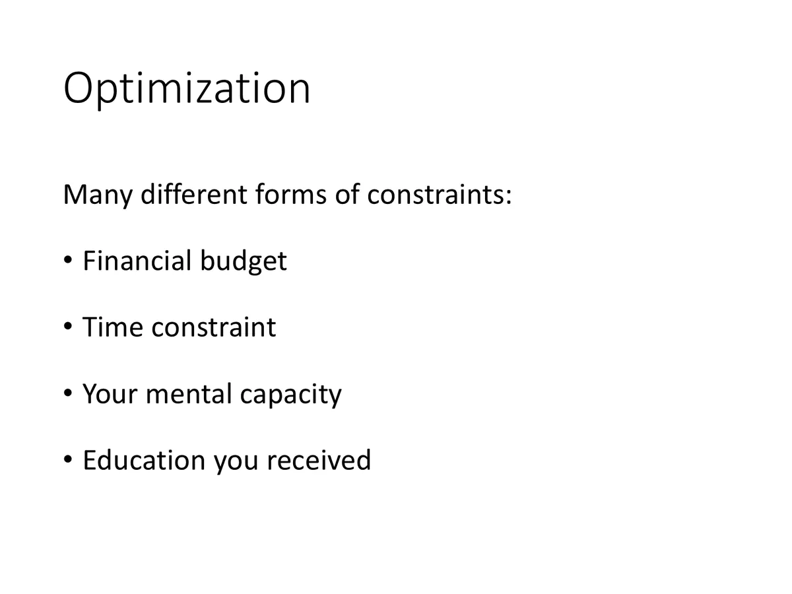
约束可以有很多种形式，而且经常同时起作用：
- 预算（钱不够）
- 时间（一天只有 24 小时）
- 体力、注意力（精力有限）
- 法律与道德（不能抢）
- 技术（造不出永动机）
- 信息（不知道明天会不会下雨）
所以「最优化」不等于「贪心」，它等于在你能做的里面挑最好的。
幻灯片原文 / 板书
Optimization --- Many different forms of constraints: Financial budget Time constraint Your mental capacity Education you received
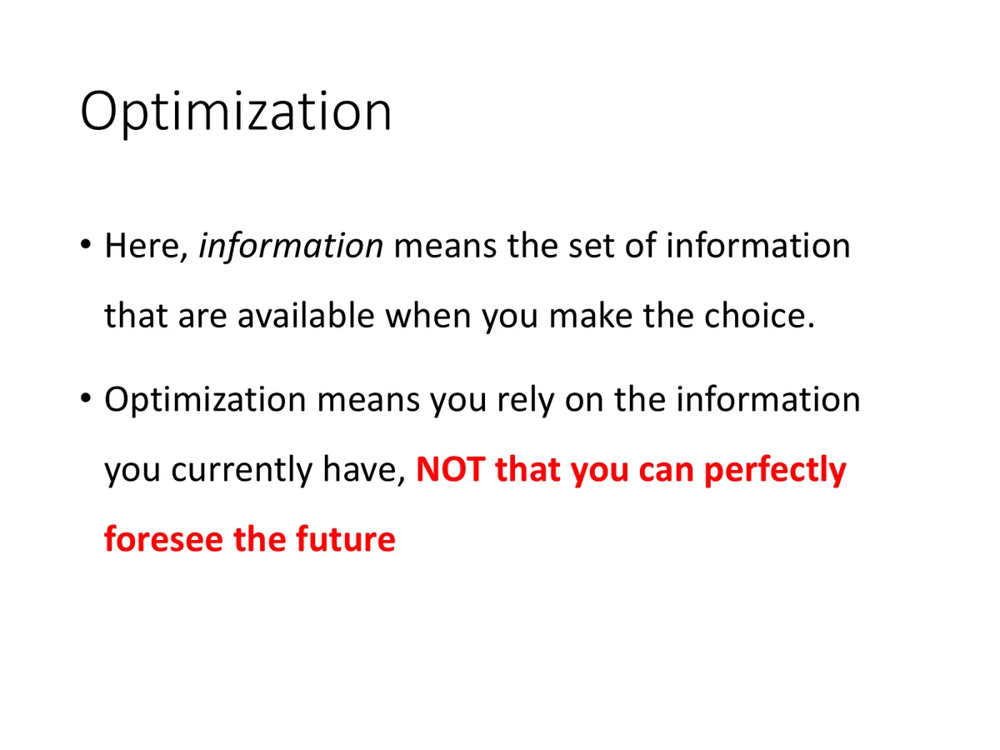
一个极易被误解的点：最优化假设人们会使用「可获得的信息」。
- 决策时你手里有什么信息，就只能基于那些信息做决定（the information available when the decision is made）。
- 最优化不要求你预见未来。 事后发现选错了，不代表当时没有最优化。
这是本讲最重要的技术性澄清之一，下一页用例子说明。
幻灯片原文 / 板书
Optimization --- Here, information means the set of information that are available when you make the choice. Optimization means you rely on the information you currently have, NOT that you can perfectly foresee the future
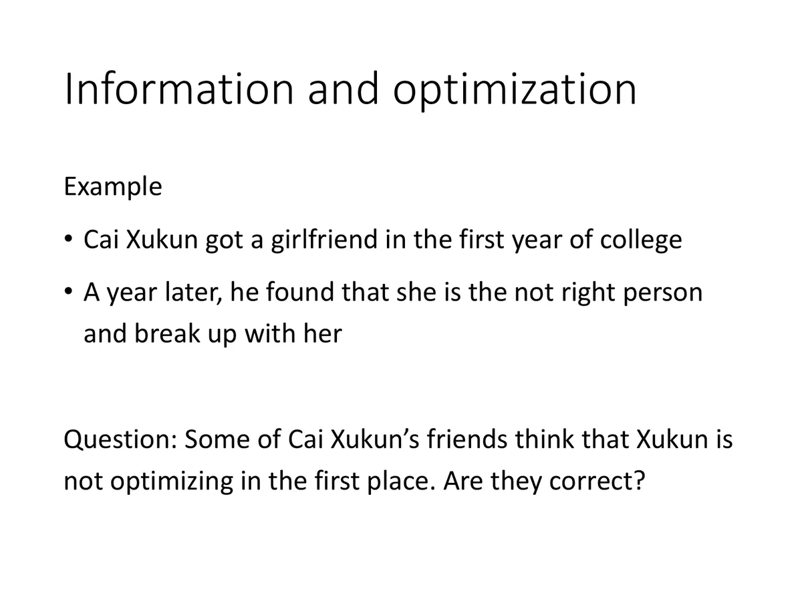
例子：某人曾经是蔡徐坤的 fan，后来「脱粉」了，甚至开始在网上骂他。
外人看来这是「当初眼光差」。但按最优化的逻辑：
- 当初喜欢他时，他掌握的信息（作品、人设、曝光）支持这个选择。
- 后来爆出的信息改变了判断，于是重新最优化，选择脱粉。
两次都是在给定信息下的最优选择，只是信息集变了。
幻灯片原文 / 板书
Information and optimization --- Example Cai Xukun got a girlfriend in the first year of college A year later, he found that she is the not right person and break up with her Question: Some of Cai Xukun’s friends think that Xukun is not optimizing in the first place. Are they correct?
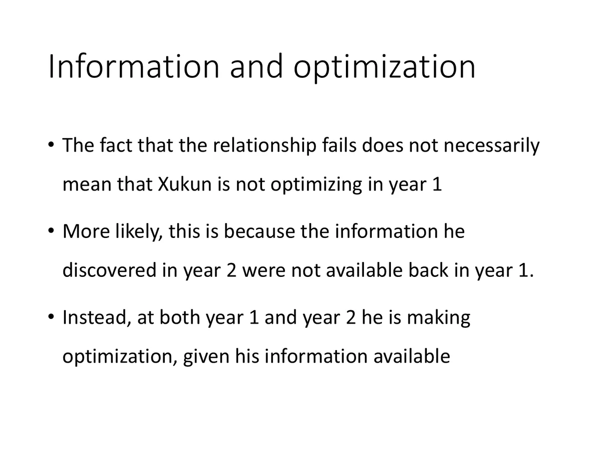
把上一页抽象成一句话：
一段关系最终失败，并不能证明当初的选择不是最优的。
- 判断选择对错，只能用决策当时的信息，不能用事后的结果。
- 这不是给错误找借口，而是给你一把尺子：评价决策质量，要和控制变量比。
同一个逻辑适用于选专业、选股票、选伴侣。这是经济学给你的、可以一直用到老的思维工具。
幻灯片原文 / 板书
Information and optimization --- The fact that the relationship fails does not necessarily mean that Xukun is not optimizing in year 1 More likely, this is because the information he discovered in year 2 were not available back in year 1. Instead, at both year 1 and year 2 he is making optimization, given his information available
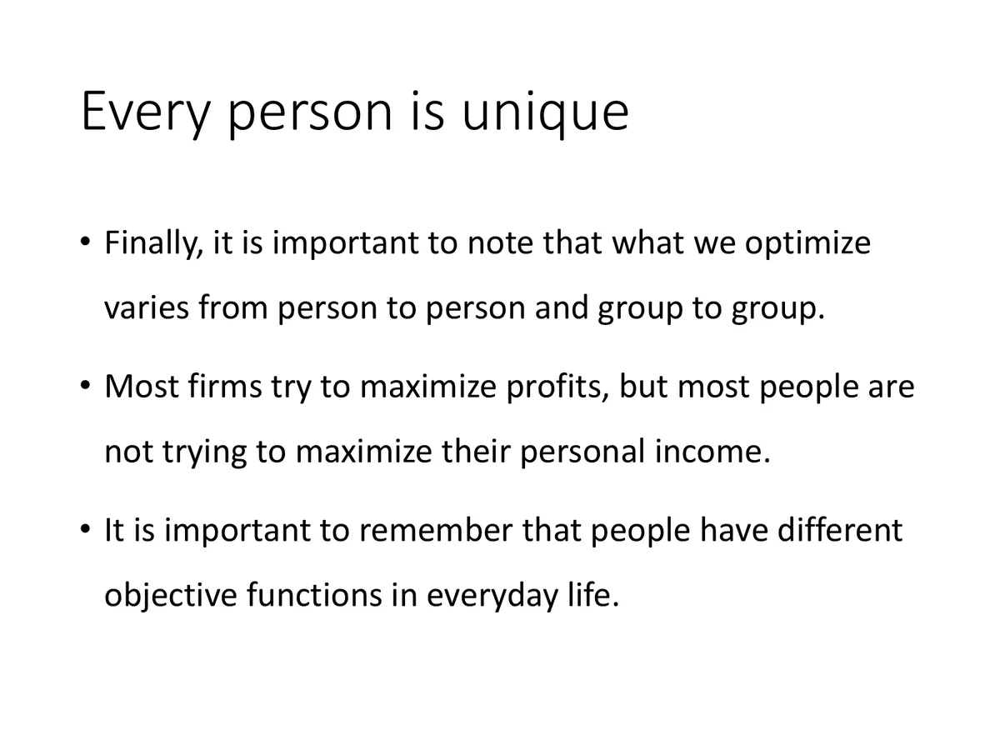
再补一个细节：目标函数因人而异。
同一件事，不同主体的「最好」不同：
- 企业的最优化目标通常是利润（profit）。
- 个人的目标可能是收入、声望、安稳、自我实现，或者它们的组合。
- 政府的目标可能是 GDP、就业、稳定、连任。
所以看到「某主体做了 X」，先问：它的目标是什么？ 目标不对，模型就全错。
幻灯片原文 / 板书
Every person is unique --- Finally, it is important to note that what we optimize varies from person to person and group to group. Most firms try to maximize profits, but most people are not trying to maximize their personal income. It is important to remember that people have different objective functions in everyday life.
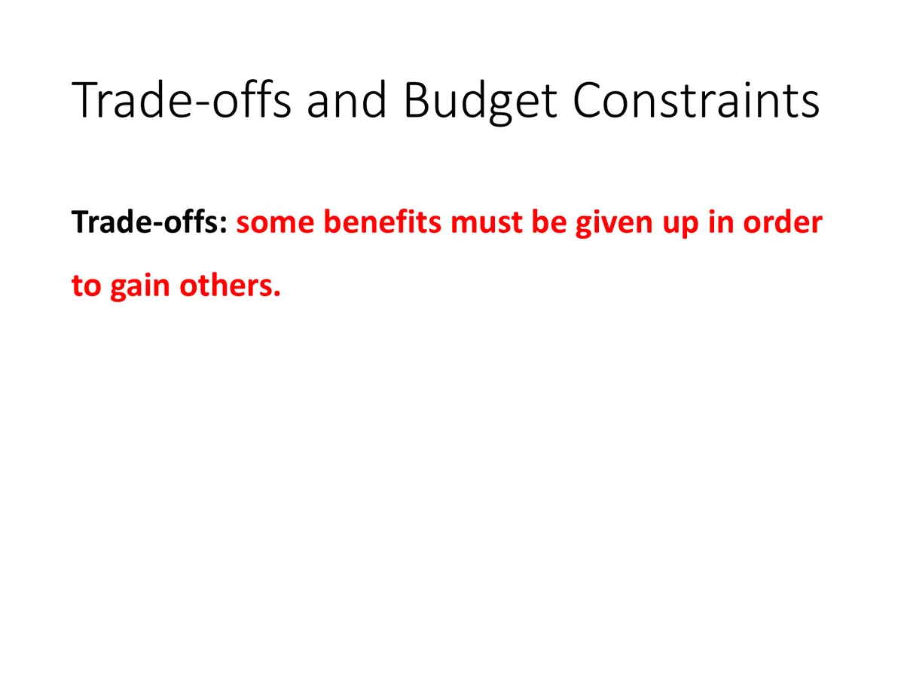
与最优化直接相连的概念是权衡取舍（trade-offs）：
想要更多 A，就必须少一点 B。
- 今晚多复习两小时，就少睡两小时。
- 企业多雇一个人，就少买一台机器。
- 政府多修一条地铁，就少建一所学校。
权衡取舍是约束的同义词：它不是「选择困难」，它是「客观上不可能全要」。整个微观经济学，本质上就是研究人们怎样在权衡取舍中做选择。
幻灯片原文 / 板书
Trade-offs and Budget Constraints --- Trade-offs: some benefits must be given up in order to gain others.
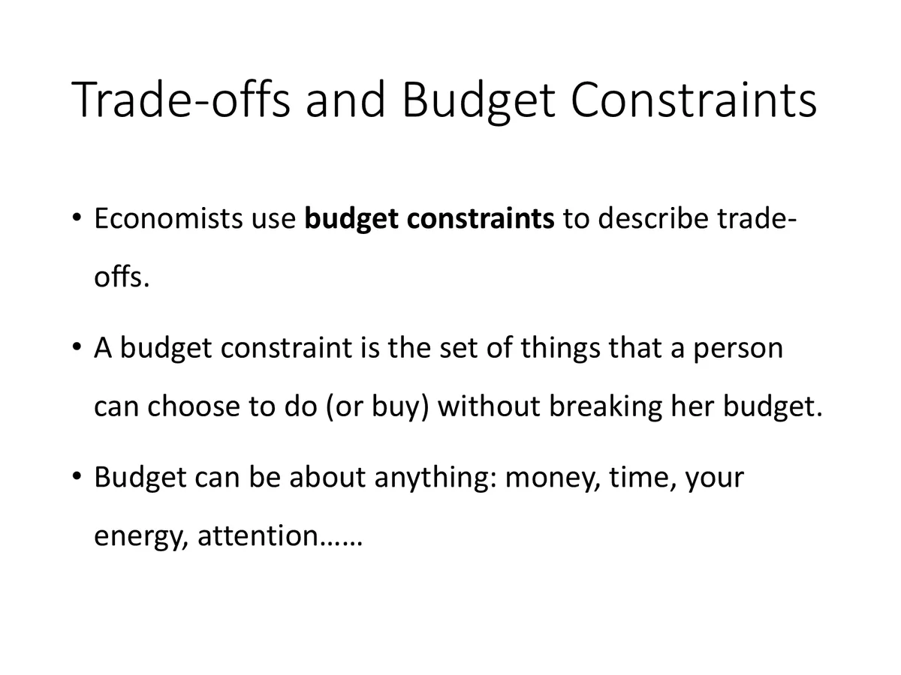
最常用的约束是预算约束（budget constraint）：
你能负担得起的所有选项的集合（the set of things you can afford）。
关键提醒：预算不一定是钱。它可以是：
- 时间预算（今天只有 5 小时空闲）
- 精力预算（一天能专注几小时）
- 注意力预算（刷短视频刷完就没力气看书了）
只要它是「有限且不可储存地浪费掉」的资源，就能写成预算约束。
幻灯片原文 / 板书
Trade-offs and Budget Constraints --- Economists use budget constraints to describe trade-offs. A budget constraint is the set of things that a person can choose to do (or buy) without breaking her budget. Budget can be about anything: money, time, your energy, attention……
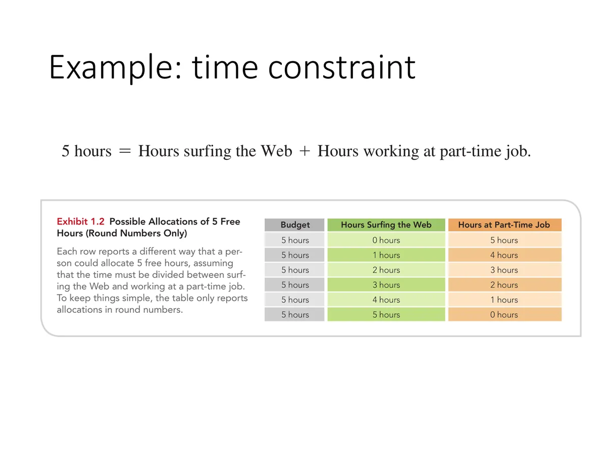
例：时间约束。 假设你有 5 小时空闲，只能用在「上网」和「兼职」两件事上：
5 小时 = 上网小时数 + 兼职小时数
课件 Exhibit 1.2 把可行组合列成一张表（只列整数）：
| 预算 | 上网小时 | 兼职小时 |
|---|---|---|
| 5 小时 | 0 | 5 |
| 5 小时 | 1 | 4 |
| 5 小时 | 2 | 3 |
| 5 小时 | 3 | 2 |
| 5 小时 | 4 | 1 |
| 5 小时 | 5 | 0 |
每一行都是「可行」的，每一行也都是「必须取舍」的。这张表就是一条预算线：多一小时上网，必然少一小时兼职。
幻灯片原文 / 板书
Example: time constraint
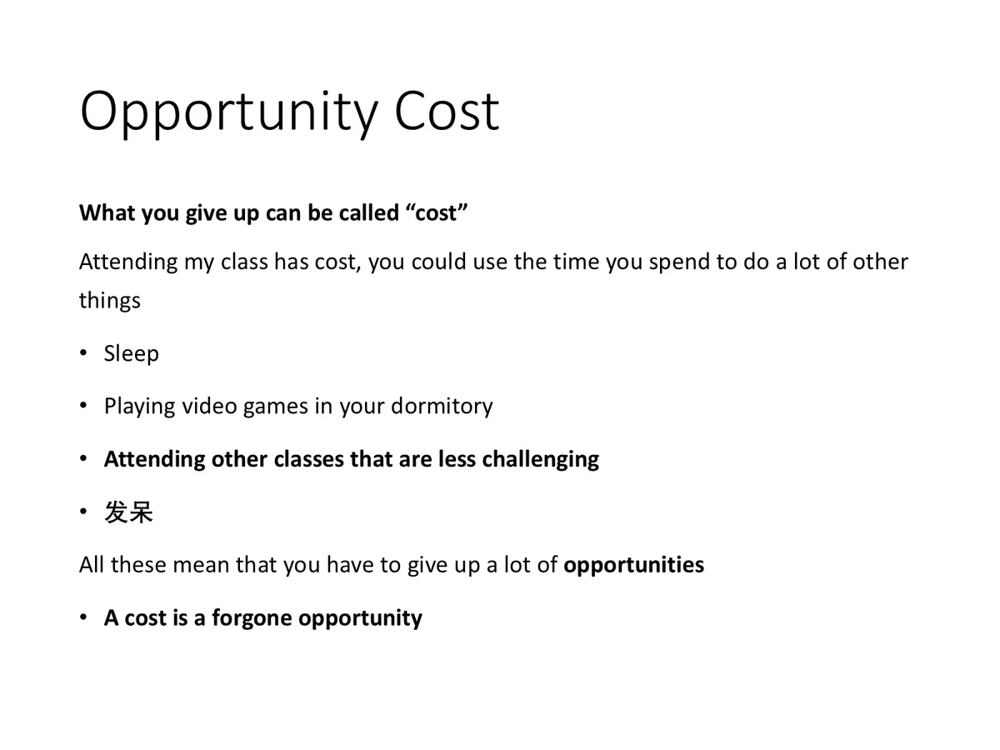
机会成本（opportunity cost）——本讲最重要的一个概念，定义是：
你做这件事的成本，是你为了做它而放弃的其他机会中，最有价值的那个。
课件给了一个大学生每天都在经历的例子：去上课的成本是什么？是「不上课的那段时间本来能做的最好的那件事」：
- 睡到自然醒
- 打游戏
- 去上一门更轻松、给分更高的课
- 纯粹发呆
注意：不是把这四件事加起来，而是取其中最好的那个。
幻灯片原文 / 板书
Opportunity Cost --- What you give up can be called “cost” Attending my class has cost, you could use the time you spend to do a lot of other things Sleep Playing video games in your dormitory Attending other classes that are less challenging 发呆 All these mean that you have to give up a lot of opportunities A cost is a forgone opportunity
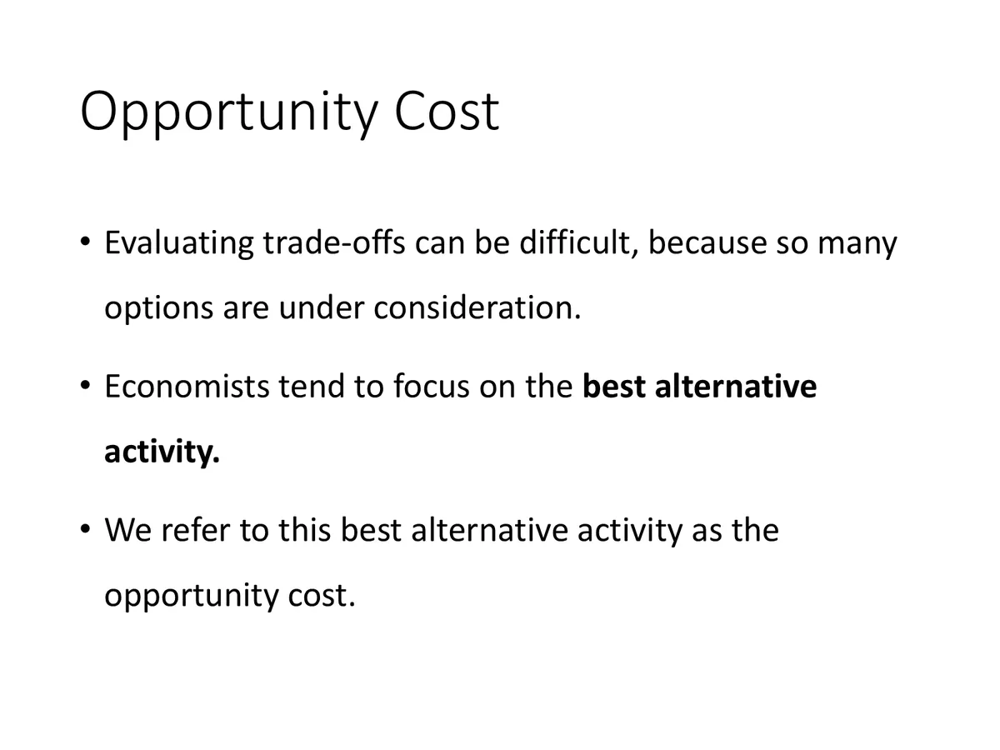
所以机会成本的关键词是 the next best alternative（次优选择/下一个最好用途）。
- 你放弃的所有选项里，只有最好的那一个进入成本。
- 因为它才是你「真正牺牲掉」的东西。
这个定义直接推翻了「成本 = 我花了多少钱」的日常直觉。很多事情一分钱没花，但机会成本极高（比如你在寝室躺一天）。
幻灯片原文 / 板书
Opportunity Cost --- Evaluating trade-offs can be difficult, because so many options are under consideration. Economists tend to focus on the best alternative activity. We refer to this best alternative activity as the opportunity cost.
抽奖例子（很经典的考试题）。 奖品是：抱一下 TF Boys 的某一位成员。你最想抱易烊千玺，其次是王俊凯，最后是王源。
现在问题：假设你抽中了，但你只能抱一个。抱易烊千玺的机会成本是多少？
答案是 王俊凯——不是你最喜欢的那位，也不是所有人的总和，而是被你放弃的最佳替代。
幻灯片原文 / 板书
Example --- A big fan of TF Boys won a lottery and was given the opportunity to hug one of the three boys, but only one. She likes Jackson Yi the most, and prefers Wang Junkai to Wang Yuan Of course, she optimized by choosing to hug Jackson Yi What is the opportunity cost of doing this?
为什么强调「只算一个」？因为要避免重复计算：
- 你只能抱一个人，所以「王源」这个机会在你选择易烊千玺时并没有真正被牺牲——即使没有易烊千玺，你也会选王俊凯。
- 同理，时间只能用于一件事，所以把「睡觉 + 游戏 + 轻松课」全部加进成本，是把成本重复算了好几遍。
机会成本的计数原则：只算被放弃的最佳替代，且只算一次。
幻灯片原文 / 板书
Note --- In calculating opportunity costs, it is important not to double-count. The fan can hug Junkai or Wang Yuan if she choose not to hug Jackson Yi, but she can not hug both. The time spent in class could have been used to go to the movies or to study for an exam, but not both. Therefore, it would not be correct to count both the forgone movie and the forgone studying as costs.
给机会成本赋值。
这很难，但极其有用（It's tough but useful）：
- 只有把成本变成同一个单位（通常是钱），不同性质的选择才能比较。
- 不赋值，你只能凭感觉说「这件事比较值」；赋值之后，你才能算出净收益，才能做最优化。
下一页是一个把「时间」折算成钱的例子。
幻灯片原文 / 板书
Assigning a Monetary Value to an Opportunity Cost --- It is difficult to estimate the real monetary value of the cost in real world circumstances but helpful to have a rough estimate.
例子：你兼职的时薪是 200 元/小时。 那么「上网一小时」的机会成本是多少？
- 如果兼职是你时间最好的替代用途，机会成本就是 200 元。
- 如果不是（比如你更想用这一小时复习），机会成本是复习那一小时的价值，200 元只是它的一个下限参照。
课件在这里追问：这个 200 元忽略了什么？ 至少三样：
- 兼职的通勤与准备工作时间（那不是净收入）；
- 兼职本身的心理成本（累、无聊）；
- 时间段的限制——深夜的一小时未必能拿去兼职。
这就是「赋值」的现实困难：数字好算，但每一步都可能漏项。
幻灯片原文 / 板书
Assigning a Monetary Value to an Opportunity Cost --- Suppose you can find a part-time job outside campus, the wage is 200RMB per hour What is the monetary value of opportunity cost, of one hour’s internet surfing? Depends on whether doing the part-time job is the best alternative If not, then the OC is at least 200RMB If yes, then the OC is 200RMB What have we neglected in this analysis?
成本—收益分析（cost-benefit analysis）：
把某个选项的全部成本和全部收益列出来，比较大小。
对经济学家来说，一件事值得说的只有一句：
成本—收益分析 = 最优化。
两者是同一件事的两种说法：最优化说「选最好的」，成本收益分析说「怎么判断哪个最好」——比净收益。
幻灯片原文 / 板书
Cost-Benefit Analysis --- Cost-benefit analysis is a calculation that identifies the best alternative, by summing benefits and subtracting costs, with both benefits and costs denominated in a common unit of measurement, like dollars. To an economist, cost-benefit analysis and optimization are the same thing.
于是最优化有了一个可操作的判据：
选净收益最大的那个选项。
- 如果净收益 > 0，做；如果 < 0，不做（当「做」与「不做」是仅有的两个选项时）。
- 如果有多个选项，选净收益最大的，而不是收益率最高的，也不是成本最低的。
这个判据既用于个人决策（实证：人们大致是这样做的），也用于规范分析（建议：这样做才是对的）。
幻灯片原文 / 板书
Cost-Benefit Analysis --- When you pick the option with the greatest net benefits, you are optimizing. So cost-benefit analysis is useful for normative economic analysis. It enables an economist to determine what an individual or a society should do.
第二根支柱：均衡。
一句大白话：别人也不是傻子。
- 你在最优化，别人也在最优化。
- 而且他们的选择会影响你，你的选择也影响他们。
所以只看一个人怎么选是不够的——必须看所有人的选择互相撞在一起之后会停在哪儿。
幻灯片原文 / 板书
The Second Principle of Economics: Equilibrium --- Not only you can optimize Other people are not stupid (even Donald Trump is not stupid) Other people are also optimizing And other people’s behavior will influence what you decide to do.
均衡的定义：
一种状态：在这种状态下，没有任何一方能通过单方面改变自己的行为而变得更好（no one believes he/she can benefit by changing his/her behavior）。
关键词是「单方面」：给定别人不变，我换做法不会更好。所以谁都没有动力再动，状态就稳住了。
幻灯片原文 / 板书
Equilibrium --- Economists think of the world as a large number of economic agents who are interacting and influencing each other at optimization. Equilibrium is the special situation in which everyone is optimizing, so nobody would benefit personally by changing his or her own behavior.
必须澄清的三点（考试常考）：
- 均衡里不是没人想变好，而是没有人相信自己能通过改变行为变好——这是信念，不是事实。
- 所以均衡是基于信念的（belief-based）：如果大家都相信换个做法没用，那么即使客观上存在更好的做法，状态也不会变。
- 均衡可以是主观的（大家以为的），也可以是客观的（真的没有更好的做法）。两者不一定重合，这个差别在讲「无谓损失」时会变得非常锋利。
幻灯片原文 / 板书
An important clarification: --- When we say that nobody would benefit personally by changing his or her own behavior, we mean that nobody believes he or she would benefit from such a change. In equilibrium, all economic agents are making their best feasible choices, taking into account all of the information they have, including their beliefs about the behavior of others. We could rewrite the definition by saying that in equilibrium, nobody perceives that they will benefit from changing their own behavior.
最生活化的均衡例子：超市结账队列。
课件画了两幅图：
- 左图「均衡中」：几条队伍一样长。此时你换到任何一队，等待时间都不会更短——没人有动力换。
- 右图「失衡」：一条队特别长，其他队短。这时一定有人从长队换到短队，直到各队长度拉平。
均衡就是「没人还想换」的那个状态。 注意：均衡不一定是「最好」的——如果只开了一个收银台，所有队都很长，那也是一个均衡。
幻灯片原文 / 板书
checkout lines at the supermarket
搭便车（free riding）——均衡最反直觉的一课。
场景：宿舍里有 5 个室友，公共区域很脏，需要有人打扫。
- 如果你花 30 分钟打扫，好处（干净）归全宿舍。
- 如果大家都只花 5–10 分钟，其实也看不出差别。
- 于是：别人有没有动力帮忙？ 没有——他也能享受你打扫的成果。
结论：每个人都有激励搭便车（everyone has an incentive to free ride）。
幻灯片原文 / 板书
The Free-Rider Problem --- Let’s use the concept of equilibrium to analyze an economic problem that may interest you: roommates. Assume that 5 roommates live in dormitory. Each roommate can spend some time contributing to the general well-being of all the roommates by throwing away trash. Or each roommate can spend all his or her time on activities that only benefit him or herself—for instance, playing a video game.
这个推理的关键不是「人懒」，而是收益与成本不匹配：
- 你承担 100% 的成本（30 分钟）。
- 你只得到 1/5 的收益（干净是整个宿舍的）。
理性计算的结果：等别人干。而每个人都这样算，就没人干。
幻灯片原文 / 板书
The Free-Rider Problem --- Imagine that one roommate starts spending time cleaning up. If he spends 30 minutes doing the cleaning, all the other roommates benefit without having to lift a finger but that would be too much work for himself. However, if he spends only 5 or 10 minutes then the situation will not change much even for himself. Although the other roommates appreciate it, they have no incentive to help him It would be beneficial to each of the roommates if everyone did a little cleaning. But each of the five roommates has an incentive to leave that to others.
均衡能做出可检验的预测。
把上一页的逻辑推一步，得到一个实证命题：
人越多的宿舍，越脏。
- 人越多 → 每个人的收益份额越小（1/N）→ 搭便车激励越强。
- 这个预测可以被数据检验：去量不同宿舍的卫生评分，看它是否随人数下降。
这就是三大支柱的联动：最优化（每个人算账）→ 均衡（大家都不干）→ 实证（预测并检验）。
幻灯片原文 / 板书
The Free-Rider Problem --- Consequently, dormitories with lots of roommates are often a mess. The equilibrium prediction is that when people live in larger rooming groups, they will have messier apartments than if the same people each had their own apartment.
另一个例子：街头抢劫 / 老人摔倒，为什么旁观者越多，越没人帮？
经济学的解释：预期别人会帮（expect others to help）。
- 只有你一个人在场：你不帮，就没人帮，责任全在你 → 你帮。
- 有 20 个人在场：你会想「总会有人出手」→ 你不出手；而每个人都这样想 → 没人出手。
这叫责任分散，机制上和搭便车完全一样。课件特意加了一句：理解了这个机制，你就不会只停留在道德谴责「人心冷漠」上——改变机制（比如明确指定某个人帮忙）比谴责更有效。
幻灯片原文 / 板书
The Free-Rider Problem --- The same thing happens when you get robbed on the street, or an old lady falls down the street and nobody helps With a lot of people in the street, people are less likely to help because they are expecting other people to help If you understand this, you are less likely to blame people for there indifference, or coldness
第三根支柱：实证主义（empiricism）。
用数据检验理论（evidence-based）。
工作方式：
- 理论给出一个可检验的预测（比如「人多的宿舍更脏」）。
- 收集数据，看预测是否成立。
- 不成立 → 修正理论，而不是修改数据。
这一支柱让经济学成为科学而不是文学：理论必须敢于被证伪。
幻灯片原文 / 板书
Empiricism --- Economists test their ideas with data. We refer to such evidence-based analysis as empirical analysis or empiricism. We use optimization and equilibrium to predict human behavior But are these predictions correct? Need to confront with the data. Could be inconsistent, then revise and improve the theory
最后一个技术提醒：相关不等于因果（correlation is not causation）。
- 观察到「人多的宿舍更脏」，可能是人数导致的，也可能是因为大宿舍分配给了低年级，而低年级本来就不爱打扫。
- 要分离出「人数」的因果效应，需要控制其他变量，或者找到外生变化（自然实验）。
这就是因果推断（causal inference）的问题，也是现代经济学最看重的方法论。这一讲不展开，但你要记住：看见两件事一起变，先问第三件事是不是在同时推动它们。
幻灯片原文 / 板书
Empiricism --- Also important and interesting is what is called causal inference. Causality versus correlation